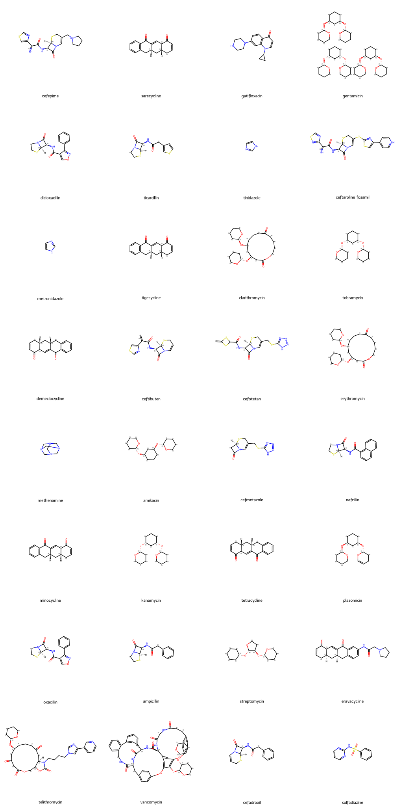

import polars as pl
import pandas as pd
import datamol as dm
import mols2grid
from rdkit import Chem
from rdkit.Chem import AllChem
from rdkit.Chem.rdmolfiles import SmilesWriter, SmilesMolSupplier
# Library modified & adapted from Patrick Walters' tutorial
# on "Identifying Scaffolds"
# - links provided in "scaffold_finder library" section under
# the section for "Combining ChEMBL anti-infectives and FtsZ compounds"
from scaffold_finder_test import find_scaffolds, get_molecules_with_scaffoldFeatures in this post
This post will talk about the following:
Pre-process and standardise compounds (e.g. converting SMILES into SELFIES and other forms)
Obtain scaffolds for compounds
Align scaffolds of compounds
Query target scaffolds against a dataframe of compounds:
Function for saving multiple SMILES in .smi file
Function for converting .smi file into a list to query and match scaffolds of interests
Identify any similarities or differences between target compound of interest against other compounds in a dataframe
Quick words
I’ve always wanted to shorten my posts to a more readable length, but it was proven to be hard again, as this post was much longer than expected. Page content links are available on the right-hand side if needing to jump to sections for quick reads.
Key question to answer
Will the scaffold of compound 3 (compound of interest) be similar to the scaffolds of any approved ChEMBL anti-infectives?
Import libraries
The following libraries were used in this post.
ChEMBL anti-infectives
Data cleaning
The dataset used was extracted from ChEMBL database, with a focus on the anti-infectives.
df_ai = pl.read_csv("chembl_anti-inf.csv", sep = ";")
df_ai
shape: (144, 29)
| Parent Molecule | Name | Synonyms | Research Codes | Phase | Drug Applicants | USAN Stem | USAN Year | USAN Definition | USAN Stem - Substem | First Approval | ATC Codes | Level 4 ATC Codes | Level 3 ATC Codes | Level 2 ATC Codes | Level 1 ATC Codes | Indication Class | Patent | Drug Type | Passes Rule of Five | First In Class | Chirality | Prodrug | Oral | Parenteral | Topical | Black Box | Availability Type | Smiles |
|---|---|---|---|---|---|---|---|---|---|---|---|---|---|---|---|---|---|---|---|---|---|---|---|---|---|---|---|---|
| str | str | str | str | f64 | str | str | str | str | str | str | str | str | str | str | str | str | str | str | i64 | i64 | str | i64 | i64 | i64 | i64 | i64 | str | str |
| "CHEMBL374975" | "FUSIDIC ACID" | "ANHYDROUS FUSI... | "CEM-102|NSC-56... | 4.0 | "" | "" | "1967" | "" | "" | "" | "J01XC01 | S01A... | "J01XC - Steroi... | "J01X - OTHER A... | "J01 - ANTIBACT... | "J - ANTIINFECT... | "Antibacterial" | "None" | "1:Synthetic Sm... | 0 | 0 | "Single Stereoi... | 0 | 0 | 0 | 0 | 0 | "Unknown" | "CC(=O)O[C@H]1C... |
| "CHEMBL130" | "CHLORAMPHENICO... | "9-HYDROXY-9-PH... | "NSC-16331|NSC-... | 4.0 | "Ivax Pharmaceu... | "" | "" | "" | "" | "1950" | "S01AA01 | S03A... | "S01AA - Antibi... | "S01A - ANTIINF... | "S01 - OPHTHALM... | "S - SENSORY OR... | "Antibacterial;... | "None" | "1:Synthetic Sm... | 1 | 0 | "Single Stereoi... | 0 | 1 | 1 | 1 | 0 | "Unknown" | "O=C(N[C@H](CO)... |
| "CHEMBL186" | "CEFEPIME" | "BMY-28142|CEFE... | "BMY-28142|J01D... | 4.0 | "Samson Medical... | "'cef-'" | "1987" | "cephalosporins... | "'cef-(cef-)'" | "1996" | "J01DE01" | "J01DE - Fourth... | "J01D - OTHER B... | "J01 - ANTIBACT... | "J - ANTIINFECT... | "Antibacterial" | "None" | "1:Synthetic Sm... | 1 | 0 | "Single Stereoi... | 0 | 0 | 1 | 0 | 0 | "Prescription O... | "CO/N=C(\C(=O)N... |
| "CHEMBL222645" | "FLOXACILLIN" | "ABBOFLOX|BRL 2... | "BRL 2039|BRL-2... | 4.0 | "" | "'-cillin'" | "1972" | "penicillins" | "'-cillin(-cill... | "" | "J01CF05" | "J01CF - Beta-l... | "J01C - BETA-LA... | "J01 - ANTIBACT... | "J - ANTIINFECT... | "Antibacterial" | "None" | "1:Synthetic Sm... | 1 | 0 | "Single Stereoi... | 0 | 0 | 0 | 0 | 0 | "Unknown" | "Cc1onc(-c2c(F)... |
| "CHEMBL2364632" | "SARECYCLINE" | "P-005672|P0056... | "P-005672|P0056... | 4.0 | "Almirall Llc" | "'-cycline'" | "2012" | "antibiotics (t... | "'-cycline(-cyc... | "2018" | "J01AA14" | "J01AA - Tetrac... | "J01A - TETRACY... | "J01 - ANTIBACT... | "J - ANTIINFECT... | "" | "US-8318706-B2" | "1:Synthetic Sm... | 1 | 0 | "Single Stereoi... | 0 | 1 | 0 | 0 | 0 | "Prescription O... | "CON(C)Cc1ccc(O... |
| "CHEMBL62193" | "SULFADIMETHOXI... | "Madribon|NSC-6... | "NSC-683544|NSC... | 4.0 | "" | "'sulfa-'" | "" | "antimicrobials... | "'sulfa-(sulfa-... | "" | "J01ED01" | "J01ED - Long-a... | "J01E - SULFONA... | "J01 - ANTIBACT... | "J - ANTIINFECT... | "" | "None" | "1:Synthetic Sm... | 1 | 0 | "Achiral Molecu... | 0 | 0 | 0 | 0 | 0 | "Withdrawn" | "COc1cc(NS(=O)(... |
| "CHEMBL2303613" | "CEFODIZIME" | "CEFODIZIME|CEF... | "HR 221|HR 221 ... | 4.0 | "" | "'cef-'" | "" | "cephalosporins... | "'cef-(cef-)'" | "" | "J01DD09" | "J01DD - Third-... | "J01D - OTHER B... | "J01 - ANTIBACT... | "J - ANTIINFECT... | "" | "None" | "1:Synthetic Sm... | 0 | 0 | "Single Stereoi... | 0 | 0 | 0 | 0 | 0 | "Unknown" | "CO/N=C(\C(=O)N... |
| "CHEMBL31" | "GATIFLOXACIN" | "AM-1155|BMS-20... | "AM-1155|BMS-20... | 4.0 | "Apotex Inc|Bri... | "'-oxacin'" | "1997" | "antibacterials... | "'-oxacin(-oxac... | "1999" | "S01AE06 | J01M... | "S01AE - Fluoro... | "S01A - ANTIINF... | "S01 - OPHTHALM... | "S - SENSORY OR... | "Antibacterial" | "None" | "1:Synthetic Sm... | 1 | 0 | "Racemic Mixtur... | 0 | 1 | 1 | 1 | 0 | "Prescription O... | "COc1c(N2CCNC(C... |
| "CHEMBL268869" | "SULFAMETHOXYPY... | "CL-13494|DEPOV... | "CL-13494|NSC-7... | 4.0 | "" | "'sulfa-'" | "" | "antimicrobials... | "'sulfa-(sulfa-... | "" | "J01ED05" | "J01ED - Long-a... | "J01E - SULFONA... | "J01 - ANTIBACT... | "J - ANTIINFECT... | "" | "None" | "1:Synthetic Sm... | 1 | 0 | "Achiral Molecu... | 0 | 0 | 0 | 0 | 0 | "Withdrawn" | "COc1ccc(NS(=O)... |
| "CHEMBL3039597" | "GENTAMICIN" | "GENTAMICIN|GEN... | "SCH-9724" | 4.0 | "Schering Corp ... | "'-micin'" | "1963" | "antibiotics (M... | "'-micin(-micin... | "1970" | "S01AA11 | S02A... | "S01AA - Antibi... | "S01A - ANTIINF... | "S01 - OPHTHALM... | "S - SENSORY OR... | "Antibacterial" | "None" | "1:Synthetic Sm... | 0 | 0 | "Unknown" | 0 | 0 | 1 | 1 | 1 | "Prescription O... | "CNC(C)[C@@H]1C... |
| "CHEMBL3182343" | "PIVAMPICILLIN" | "MK-191|PIVAMPI... | "MK-191" | 4.0 | "" | "'-cillin'" | "1970" | "penicillins" | "'-cillin(-cill... | "" | "J01CA02" | "J01CA - Penici... | "J01C - BETA-LA... | "J01 - ANTIBACT... | "J - ANTIINFECT... | "" | "None" | "1:Synthetic Sm... | 1 | 0 | "Single Stereoi... | 1 | 0 | 0 | 0 | 0 | "Unknown" | "CC(C)(C)C(=O)O... |
| "CHEMBL2146161" | "MIKAMYCIN" | "MIKAMYCIN|PRIS... | "RP 7293|RP-729... | 4.0 | "" | "'-mycin'" | "" | "antibiotics (S... | "'-mycin(-mycin... | "" | "J01FG01" | "J01FG - Strept... | "J01F - MACROLI... | "J01 - ANTIBACT... | "J - ANTIINFECT... | "" | "None" | "1:Synthetic Sm... | 0 | 0 | "Unknown" | 0 | 0 | 0 | 0 | 0 | "Unknown" | "CC1=C\[C@@H](O... |
| ... | ... | ... | ... | ... | ... | ... | ... | ... | ... | ... | ... | ... | ... | ... | ... | ... | ... | ... | ... | ... | ... | ... | ... | ... | ... | ... | ... | ... |
| "CHEMBL572" | "NITROFURANTOIN... | "BERKFURIN|CEDU... | "NSC-2107|NSC-4... | 4.0 | "Sun Pharmaceut... | "'-toin'" | "" | "antiepileptics... | "'-toin(-toin)'... | "1953" | "J01XE01 | J01X... | "J01XE - Nitrof... | "J01X - OTHER A... | "J01 - ANTIBACT... | "J - ANTIINFECT... | "Antibacterial ... | "None" | "1:Synthetic Sm... | 1 | 0 | "Achiral Molecu... | 0 | 1 | 1 | 0 | 0 | "Prescription O... | "O=C1CN(/N=C/c2... |
| "CHEMBL1596" | "CARBENICILLIN ... | "CARBENICILLIN ... | "" | 4.0 | "Pfizer Laborat... | "'-cillin'" | "1972" | "penicillins" | "'-cillin(-cill... | "1972" | "J01CA05" | "J01CA - Penici... | "J01C - BETA-LA... | "J01 - ANTIBACT... | "J - ANTIINFECT... | "Antibacterial" | "None" | "1:Synthetic Sm... | 1 | 0 | "Racemic Mixtur... | 1 | 1 | 0 | 0 | 0 | "Discontinued" | "CC1(C)S[C@@H]2... |
| "CHEMBL44354" | "CEFTAZIDIME" | "CEFTAZIDIME|CE... | "GR 20263|GR-20... | 4.0 | "Glaxosmithklin... | "'cef-'" | "1980" | "cephalosporins... | "'cef-(cef-)'" | "1985" | "J01DD02" | "J01DD - Third-... | "J01D - OTHER B... | "J01 - ANTIBACT... | "J - ANTIINFECT... | "Antibacterial" | "US-7112592-B2" | "1:Synthetic Sm... | 0 | 0 | "Single Stereoi... | 0 | 0 | 1 | 0 | 1 | "Prescription O... | "CC(C)(O/N=C(\C... |
| "CHEMBL29" | "BENZYLPENICILL... | "BENZYL PENICIL... | "J01CE01|NSC-19... | 4.0 | "Hq Specialty P... | "'-cillin'" | "" | "penicillins" | "'-cillin(-cill... | "1947" | "J01CE01 | S01A... | "J01CE - Beta-l... | "J01C - BETA-LA... | "J01 - ANTIBACT... | "J - ANTIINFECT... | "Antibacterial" | "None" | "1:Synthetic Sm... | 1 | 0 | "Single Stereoi... | 0 | 1 | 1 | 0 | 1 | "Prescription O... | "CC1(C)S[C@@H]2... |
| "CHEMBL277100" | "TEMAFLOXACIN" | "Omniflox|TEMAF... | "" | 4.0 | "" | "'-oxacin'" | "1988" | "antibacterials... | "'-oxacin(-oxac... | "1992" | "J01MA05" | "J01MA - Fluoro... | "J01M - QUINOLO... | "J01 - ANTIBACT... | "J - ANTIINFECT... | "Antibacterial ... | "None" | "1:Synthetic Sm... | 1 | 0 | "Racemic Mixtur... | 0 | 0 | 0 | 0 | 0 | "Withdrawn" | "CC1CN(c2cc3c(c... |
| "CHEMBL1731" | "MEZLOCILLIN" | "BAY-F-1353|BAY... | "BAY-F-1353" | 4.0 | "Bayer Pharmace... | "'-cillin'" | "1976" | "penicillins" | "'-cillin(-cill... | "1981" | "J01CA10" | "J01CA - Penici... | "J01C - BETA-LA... | "J01 - ANTIBACT... | "J - ANTIINFECT... | "Antibacterial" | "None" | "1:Synthetic Sm... | 0 | 0 | "Single Stereoi... | 0 | 0 | 1 | 0 | 0 | "Discontinued" | "CC1(C)S[C@@H]2... |
| "CHEMBL2105612" | "PROPICILLIN" | "(1-PHENOXYPROP... | "" | 4.0 | "" | "'-cillin'" | "" | "penicillins" | "'-cillin(-cill... | "" | "J01CE03" | "J01CE - Beta-l... | "J01C - BETA-LA... | "J01 - ANTIBACT... | "J - ANTIINFECT... | "" | "None" | "1:Synthetic Sm... | 1 | 0 | "Racemic Mixtur... | 0 | 0 | 0 | 0 | 0 | "Unknown" | "CCC(Oc1ccccc1)... |
| "CHEMBL8" | "CIPROFLOXACIN" | "BAY O 9867 FRE... | "BAY O 9867 FRE... | 4.0 | "Inforlife Sa|A... | "'-oxacin'" | "1987" | "antibacterials... | "'-oxacin(-oxac... | "1987" | "J01MA02 | S03A... | "J01MA - Fluoro... | "J01M - QUINOLO... | "J01 - ANTIBACT... | "J - ANTIINFECT... | "Antibacterial" | "US-8318817-B2" | "1:Synthetic Sm... | 1 | 0 | "Achiral Molecu... | 0 | 1 | 1 | 1 | 1 | "Prescription O... | "O=C(O)c1cn(C2C... |
| "CHEMBL9" | "NORFLOXACIN" | "Baccidal|CHIBR... | "MK-366|NSC-757... | 4.0 | "Merck Research... | "'-oxacin'" | "1984" | "antibacterials... | "'-oxacin(-oxac... | "1986" | "J01MA06 | S01A... | "J01MA - Fluoro... | "J01M - QUINOLO... | "J01 - ANTIBACT... | "J - ANTIINFECT... | "Antibacterial" | "None" | "1:Synthetic Sm... | 1 | 0 | "Achiral Molecu... | 0 | 1 | 0 | 1 | 1 | "Prescription O... | "CCn1cc(C(=O)O)... |
| "CHEMBL21" | "SULFANILAMIDE" | "ANILINE-P-SULF... | "NSC-7618" | 4.0 | "Mylan Specialt... | "'sulfa-'" | "" | "antimicrobials... | "'sulfa-(sulfa-... | "1985" | "D06BA05 | J01E... | "D06BA - Sulfon... | "D06B - CHEMOTH... | "D06 - ANTIBIOT... | "D - DERMATOLOG... | "" | "None" | "1:Synthetic Sm... | 1 | 0 | "Achiral Molecu... | 0 | 0 | 0 | 1 | 0 | "Prescription O... | "Nc1ccc(S(N)(=O... |
| "CHEMBL4" | "OFLOXACIN" | "DL-8280|EXOCIN... | "DL-8280|HOE 28... | 4.0 | "Bausch And Lom... | "'-oxacin'" | "1984" | "antibacterials... | "'-oxacin(-oxac... | "1990" | "J01MA01 | S02A... | "J01MA - Fluoro... | "J01M - QUINOLO... | "J01 - ANTIBACT... | "J - ANTIINFECT... | "Antibacterial" | "None" | "1:Synthetic Sm... | 1 | 0 | "Racemic Mixtur... | 0 | 1 | 1 | 1 | 1 | "Prescription O... | "CC1COc2c(N3CCN... |
| "CHEMBL530" | "AMDINOCILLIN" | "AMDINOCILLIN|C... | "FL 1060|FL-106... | 4.0 | "Hoffmann La Ro... | "'-cillin'" | "1981" | "penicillins" | "'-cillin(-cill... | "1984" | "J01CA11" | "J01CA - Penici... | "J01C - BETA-LA... | "J01 - ANTIBACT... | "J - ANTIINFECT... | "Antibacterial" | "None" | "1:Synthetic Sm... | 1 | 0 | "Single Stereoi... | 0 | 0 | 1 | 0 | 0 | "Discontinued" | "CC1(C)S[C@@H]2... |
# Uncomment below if requiring a quick overview on all column names,
# first ten variables in each column and each column data type
#print(df_ai.glimpse())Under the “Availability Type” column, there were a few different availabilities for each anti-bacterial such as, “Discontinued”, “Withdrawn”, “Unknown” and “Prescription Only”.
df_ai.groupby("Availability Type").count()
shape: (4, 2)
| Availability Type | count |
|---|---|
| str | u32 |
| "Discontinued" | 36 |
| "Prescription O... | 72 |
| "Unknown" | 29 |
| "Withdrawn" | 7 |
Because I only wanted to choose the “Prescription Only” ones, the following filter condition was applied.
df_ai_rx = df_ai.filter(pl.col("Availability Type") == "Prescription Only")
df_ai_rx.head()
shape: (5, 29)
| Parent Molecule | Name | Synonyms | Research Codes | Phase | Drug Applicants | USAN Stem | USAN Year | USAN Definition | USAN Stem - Substem | First Approval | ATC Codes | Level 4 ATC Codes | Level 3 ATC Codes | Level 2 ATC Codes | Level 1 ATC Codes | Indication Class | Patent | Drug Type | Passes Rule of Five | First In Class | Chirality | Prodrug | Oral | Parenteral | Topical | Black Box | Availability Type | Smiles |
|---|---|---|---|---|---|---|---|---|---|---|---|---|---|---|---|---|---|---|---|---|---|---|---|---|---|---|---|---|
| str | str | str | str | f64 | str | str | str | str | str | str | str | str | str | str | str | str | str | str | i64 | i64 | str | i64 | i64 | i64 | i64 | i64 | str | str |
| "CHEMBL186" | "CEFEPIME" | "BMY-28142|CEFE... | "BMY-28142|J01D... | 4.0 | "Samson Medical... | "'cef-'" | "1987" | "cephalosporins... | "'cef-(cef-)'" | "1996" | "J01DE01" | "J01DE - Fourth... | "J01D - OTHER B... | "J01 - ANTIBACT... | "J - ANTIINFECT... | "Antibacterial" | "None" | "1:Synthetic Sm... | 1 | 0 | "Single Stereoi... | 0 | 0 | 1 | 0 | 0 | "Prescription O... | "CO/N=C(\C(=O)N... |
| "CHEMBL2364632" | "SARECYCLINE" | "P-005672|P0056... | "P-005672|P0056... | 4.0 | "Almirall Llc" | "'-cycline'" | "2012" | "antibiotics (t... | "'-cycline(-cyc... | "2018" | "J01AA14" | "J01AA - Tetrac... | "J01A - TETRACY... | "J01 - ANTIBACT... | "J - ANTIINFECT... | "" | "US-8318706-B2" | "1:Synthetic Sm... | 1 | 0 | "Single Stereoi... | 0 | 1 | 0 | 0 | 0 | "Prescription O... | "CON(C)Cc1ccc(O... |
| "CHEMBL31" | "GATIFLOXACIN" | "AM-1155|BMS-20... | "AM-1155|BMS-20... | 4.0 | "Apotex Inc|Bri... | "'-oxacin'" | "1997" | "antibacterials... | "'-oxacin(-oxac... | "1999" | "S01AE06 | J01M... | "S01AE - Fluoro... | "S01A - ANTIINF... | "S01 - OPHTHALM... | "S - SENSORY OR... | "Antibacterial" | "None" | "1:Synthetic Sm... | 1 | 0 | "Racemic Mixtur... | 0 | 1 | 1 | 1 | 0 | "Prescription O... | "COc1c(N2CCNC(C... |
| "CHEMBL3039597" | "GENTAMICIN" | "GENTAMICIN|GEN... | "SCH-9724" | 4.0 | "Schering Corp ... | "'-micin'" | "1963" | "antibiotics (M... | "'-micin(-micin... | "1970" | "S01AA11 | S02A... | "S01AA - Antibi... | "S01A - ANTIINF... | "S01 - OPHTHALM... | "S - SENSORY OR... | "Antibacterial" | "None" | "1:Synthetic Sm... | 0 | 0 | "Unknown" | 0 | 0 | 1 | 1 | 1 | "Prescription O... | "CNC(C)[C@@H]1C... |
| "CHEMBL893" | "DICLOXACILLIN" | "BRL-1702|DICLO... | "BRL-1702|R-134... | 4.0 | "Teva Pharmaceu... | "'-cillin'" | "1965" | "penicillins" | "'-cillin(-cill... | "1968" | "J01CF01" | "J01CF - Beta-l... | "J01C - BETA-LA... | "J01 - ANTIBACT... | "J - ANTIINFECT... | "Antibacterial" | "None" | "1:Synthetic Sm... | 1 | 0 | "Single Stereoi... | 0 | 1 | 0 | 0 | 0 | "Prescription O... | "Cc1onc(-c2c(Cl... |
In preparation for possible future work on building machine learning models on this line of work, I looked into Datamol’s function on pre-processing molecule (shown in the next section), as it involved converting SMILES strings into SELFIES (self-referencing embedded strings), which were considered to be more robust than SMILES.
However, I kept running into an error, with the error message showing the SMILES column was empty. After a few tries I realised that I’ve actually forgotten to check whether there were any missing SMILES in the column. So here I’ve filtered the SMILES column to look for any missing SMILES
df_ai_rx.filter(pl.col("Smiles") == "")
shape: (1, 29)
| Parent Molecule | Name | Synonyms | Research Codes | Phase | Drug Applicants | USAN Stem | USAN Year | USAN Definition | USAN Stem - Substem | First Approval | ATC Codes | Level 4 ATC Codes | Level 3 ATC Codes | Level 2 ATC Codes | Level 1 ATC Codes | Indication Class | Patent | Drug Type | Passes Rule of Five | First In Class | Chirality | Prodrug | Oral | Parenteral | Topical | Black Box | Availability Type | Smiles |
|---|---|---|---|---|---|---|---|---|---|---|---|---|---|---|---|---|---|---|---|---|---|---|---|---|---|---|---|---|
| str | str | str | str | f64 | str | str | str | str | str | str | str | str | str | str | str | str | str | str | i64 | i64 | str | i64 | i64 | i64 | i64 | i64 | str | str |
| "CHEMBL3989751" | "NEOMYCIN" | "FRADIOMYCIN|KA... | "" | 4.0 | "Bayer Pharmace... | "'-mycin'" | "1966" | "antibiotics (S... | "'-mycin(-mycin... | "1957" | "R02AB01 | S01A... | "R02AB - Antibi... | "R02A - THROAT ... | "R02 - THROAT P... | "R - RESPIRATOR... | "" | "None" | "1:Synthetic Sm... | 0 | 0 | "Single Stereoi... | 0 | 1 | 0 | 1 | 1 | "Prescription O... | "" |
Neomycin was the only compound found to have no SMILES recorded. To fix this error, I then used the “when-then-otherwise” expression in Polars again (used in previous post) to replace the empty string in the dataframe. A code example below was kindly adapted from StackOverflow from this link, and code example as shown below.
```{python}
only_these = ['str1', 'str2']
df.with_columns([
pl.when(pl.col(only_these).str.lengths() == 0)
.then(None)
.otherwise(pl.col(only_these))
.keep_name()
])
```This was what I’ve done to amend the issue.
# Canonical SMILES for neomycin was extracted from PubChem
# (https://pubchem.ncbi.nlm.nih.gov/compound/Neomycin)
df_ai_rx = df_ai_rx.with_columns([
pl.when(pl.col("Smiles").str.lengths() == 0)
.then("C1C(C(C(C(C1N)OC2C(C(C(C(O2)CN)O)O)N)OC3C(C(C(O3)CO)OC4C(C(C(C(O4)CN)O)O)N)O)O)N")
.otherwise(pl.col("Smiles"))
.keep_name()
])
df_ai_rx
shape: (72, 29)
| Parent Molecule | Name | Synonyms | Research Codes | Phase | Drug Applicants | USAN Stem | USAN Year | USAN Definition | USAN Stem - Substem | First Approval | ATC Codes | Level 4 ATC Codes | Level 3 ATC Codes | Level 2 ATC Codes | Level 1 ATC Codes | Indication Class | Patent | Drug Type | Passes Rule of Five | First In Class | Chirality | Prodrug | Oral | Parenteral | Topical | Black Box | Availability Type | Smiles |
|---|---|---|---|---|---|---|---|---|---|---|---|---|---|---|---|---|---|---|---|---|---|---|---|---|---|---|---|---|
| str | str | str | str | f64 | str | str | str | str | str | str | str | str | str | str | str | str | str | str | i64 | i64 | str | i64 | i64 | i64 | i64 | i64 | str | str |
| "CHEMBL186" | "CEFEPIME" | "BMY-28142|CEFE... | "BMY-28142|J01D... | 4.0 | "Samson Medical... | "'cef-'" | "1987" | "cephalosporins... | "'cef-(cef-)'" | "1996" | "J01DE01" | "J01DE - Fourth... | "J01D - OTHER B... | "J01 - ANTIBACT... | "J - ANTIINFECT... | "Antibacterial" | "None" | "1:Synthetic Sm... | 1 | 0 | "Single Stereoi... | 0 | 0 | 1 | 0 | 0 | "Prescription O... | "CO/N=C(\C(=O)N... |
| "CHEMBL2364632" | "SARECYCLINE" | "P-005672|P0056... | "P-005672|P0056... | 4.0 | "Almirall Llc" | "'-cycline'" | "2012" | "antibiotics (t... | "'-cycline(-cyc... | "2018" | "J01AA14" | "J01AA - Tetrac... | "J01A - TETRACY... | "J01 - ANTIBACT... | "J - ANTIINFECT... | "" | "US-8318706-B2" | "1:Synthetic Sm... | 1 | 0 | "Single Stereoi... | 0 | 1 | 0 | 0 | 0 | "Prescription O... | "CON(C)Cc1ccc(O... |
| "CHEMBL31" | "GATIFLOXACIN" | "AM-1155|BMS-20... | "AM-1155|BMS-20... | 4.0 | "Apotex Inc|Bri... | "'-oxacin'" | "1997" | "antibacterials... | "'-oxacin(-oxac... | "1999" | "S01AE06 | J01M... | "S01AE - Fluoro... | "S01A - ANTIINF... | "S01 - OPHTHALM... | "S - SENSORY OR... | "Antibacterial" | "None" | "1:Synthetic Sm... | 1 | 0 | "Racemic Mixtur... | 0 | 1 | 1 | 1 | 0 | "Prescription O... | "COc1c(N2CCNC(C... |
| "CHEMBL3039597" | "GENTAMICIN" | "GENTAMICIN|GEN... | "SCH-9724" | 4.0 | "Schering Corp ... | "'-micin'" | "1963" | "antibiotics (M... | "'-micin(-micin... | "1970" | "S01AA11 | S02A... | "S01AA - Antibi... | "S01A - ANTIINF... | "S01 - OPHTHALM... | "S - SENSORY OR... | "Antibacterial" | "None" | "1:Synthetic Sm... | 0 | 0 | "Unknown" | 0 | 0 | 1 | 1 | 1 | "Prescription O... | "CNC(C)[C@@H]1C... |
| "CHEMBL893" | "DICLOXACILLIN" | "BRL-1702|DICLO... | "BRL-1702|R-134... | 4.0 | "Teva Pharmaceu... | "'-cillin'" | "1965" | "penicillins" | "'-cillin(-cill... | "1968" | "J01CF01" | "J01CF - Beta-l... | "J01C - BETA-LA... | "J01 - ANTIBACT... | "J - ANTIINFECT... | "Antibacterial" | "None" | "1:Synthetic Sm... | 1 | 0 | "Single Stereoi... | 0 | 1 | 0 | 0 | 0 | "Prescription O... | "Cc1onc(-c2c(Cl... |
| "CHEMBL1449" | "TICARCILLIN" | "TICARCILLIN|Ti... | "" | 4.0 | "Glaxosmithklin... | "'-cillin'" | "1973" | "penicillins" | "'-cillin(-cill... | "1976" | "J01CA13" | "J01CA - Penici... | "J01C - BETA-LA... | "J01 - ANTIBACT... | "J - ANTIINFECT... | "Antibacterial" | "None" | "1:Synthetic Sm... | 1 | 0 | "Single Stereoi... | 0 | 0 | 1 | 0 | 0 | "Prescription O... | "CC1(C)S[C@@H]2... |
| "CHEMBL1220" | "TINIDAZOLE" | "CP-12,574|CP-1... | "CP-12,574|CP-1... | 4.0 | "Mission Pharma... | "'-nidazole'" | "1970" | "antiprotozoal ... | "'-nidazole(-ni... | "2004" | "P01AB02 | J01X... | "P01AB - Nitroi... | "P01A - AGENTS ... | "P01 - ANTIPROT... | "P - ANTIPARASI... | "Antiprotozoal" | "None" | "1:Synthetic Sm... | 1 | 0 | "Achiral Molecu... | 1 | 1 | 0 | 0 | 1 | "Prescription O... | "CCS(=O)(=O)CCn... |
| "CHEMBL501122" | "CEFTAROLINE FO... | "CEFTAROLINE FO... | "PPI-0903|TAK 5... | 4.0 | "Apotex Inc|All... | "'cef-; fos-'" | "2006" | "cephalosporins... | "'cef-(cef-); f... | "2010" | "J01DI02" | "J01DI - Other ... | "J01D - OTHER B... | "J01 - ANTIBACT... | "J - ANTIINFECT... | "" | "US-6417175-B1" | "1:Synthetic Sm... | 0 | 0 | "Single Stereoi... | 1 | 0 | 1 | 0 | 0 | "Prescription O... | "CCO/N=C(\C(=O)... |
| "CHEMBL137" | "METRONIDAZOLE" | "ACEA|ANABACT|B... | "BAY-5360|BAYER... | 4.0 | "Inforlife Sa|L... | "'-nidazole'" | "1962" | "antiprotozoal ... | "'-nidazole(-ni... | "1963" | "D06BX01 | P01A... | "D06BX - Other ... | "D06B - CHEMOTH... | "D06 - ANTIBIOT... | "D - DERMATOLOG... | "Antibacterial,... | "US-6881726-B2" | "1:Synthetic Sm... | 1 | 0 | "Achiral Molecu... | 0 | 1 | 1 | 1 | 1 | "Prescription O... | "Cc1ncc([N+](=O... |
| "CHEMBL376140" | "TIGECYCLINE" | "TIGECYCLINE|Ty... | "WAY-GAR-936" | 4.0 | "Apotex Inc|Fre... | "'-cycline'" | "2002" | "antibiotics (t... | "'-cycline(-cyc... | "2005" | "J01AA12" | "J01AA - Tetrac... | "J01A - TETRACY... | "J01 - ANTIBACT... | "J - ANTIINFECT... | "" | "US-7879828-B2" | "1:Synthetic Sm... | 0 | 0 | "Single Stereoi... | 0 | 0 | 1 | 0 | 1 | "Prescription O... | "CN(C)c1cc(NC(=... |
| "CHEMBL1741" | "CLARITHROMYCIN... | "6-O-METHYLERYT... | "A-56268|ABBOTT... | 4.0 | "Sunshine Lake ... | "'-mycin'" | "1988" | "antibiotics (S... | "'-mycin(-mycin... | "1991" | "J01FA09" | "J01FA - Macrol... | "J01F - MACROLI... | "J01 - ANTIBACT... | "J - ANTIINFECT... | "Antibacterial" | "US-7977488-B2" | "1:Synthetic Sm... | 0 | 0 | "Single Stereoi... | 0 | 1 | 0 | 0 | 0 | "Prescription O... | "CC[C@H]1OC(=O)... |
| "CHEMBL1747" | "TOBRAMYCIN" | "47663|Aktob|BE... | "47663|NSC-1805... | 4.0 | "Igi Laboratori... | "'-mycin'" | "1972" | "antibiotics (S... | "'-mycin(-mycin... | "1975" | "J01GB01 | S01A... | "J01GB - Other ... | "J01G - AMINOGL... | "J01 - ANTIBACT... | "J - ANTIINFECT... | "Antibacterial" | "US-6987094-B2" | "1:Synthetic Sm... | 0 | 0 | "Single Stereoi... | 0 | 0 | 1 | 1 | 1 | "Prescription O... | "NC[C@H]1O[C@H]... |
| ... | ... | ... | ... | ... | ... | ... | ... | ... | ... | ... | ... | ... | ... | ... | ... | ... | ... | ... | ... | ... | ... | ... | ... | ... | ... | ... | ... | ... |
| "CHEMBL404" | "TAZOBACTAM" | "CL 298,741|CL-... | "CL 298,741|CL-... | 4.0 | "Wytells Pharma... | "'-bactam'" | "1989" | "beta-lactamase... | "'-bactam(-bact... | "1993" | "J01CG02" | "J01CG - Beta-l... | "J01C - BETA-LA... | "J01 - ANTIBACT... | "J - ANTIINFECT... | "Inhibitor (bet... | "US-6900184-B2" | "1:Synthetic Sm... | 1 | 0 | "Single Stereoi... | 0 | 0 | 1 | 0 | 0 | "Prescription O... | "C[C@]1(Cn2ccnn... |
| "CHEMBL1689772" | "OMADACYCLINE" | "AMADACYCLINE|B... | "BAY 73-6944|PT... | 4.0 | "Paratek Pharma... | "'-cycline'" | "2009" | "antibiotics (t... | "'-cycline(-cyc... | "2018" | "J01AA15" | "J01AA - Tetrac... | "J01A - TETRACY... | "J01 - ANTIBACT... | "J - ANTIINFECT... | "" | "US-7326696-B2" | "1:Synthetic Sm... | 0 | 0 | "Single Stereoi... | 0 | 1 | 1 | 0 | 0 | "Prescription O... | "CN(C)c1cc(CNCC... |
| "CHEMBL3989974" | "CEFIDEROCOL" | "CEFIDEROCOL|GS... | "GSK2696266|S-6... | 4.0 | "Shionogi Inc" | "'cef-'" | "2017" | "cephalosporins... | "'cef-(cef-)'" | "2019" | "J01DI04" | "J01DI - Other ... | "J01D - OTHER B... | "J01 - ANTIBACT... | "J - ANTIINFECT... | "" | "US-9238657-B2" | "1:Synthetic Sm... | 0 | 0 | "Single Stereoi... | 0 | 0 | 1 | 0 | 0 | "Prescription O... | "CC(C)(O/N=C(\C... |
| "CHEMBL1435" | "CEFAZOLIN" | "CEFAZOLIN|CEPH... | "J01DB04|SK&F-4... | 4.0 | "Glaxosmithklin... | "'cef-'" | "1972" | "cephalosporins... | "'cef-(cef-)'" | "1973" | "J01DB04" | "J01DB - First-... | "J01D - OTHER B... | "J01 - ANTIBACT... | "J - ANTIINFECT... | "Antibacterial ... | "None" | "1:Synthetic Sm... | 0 | 0 | "Single Stereoi... | 0 | 0 | 1 | 0 | 0 | "Prescription O... | "Cc1nnc(SCC2=C(... |
| "CHEMBL3989751" | "NEOMYCIN" | "FRADIOMYCIN|KA... | "" | 4.0 | "Bayer Pharmace... | "'-mycin'" | "1966" | "antibiotics (S... | "'-mycin(-mycin... | "1957" | "R02AB01 | S01A... | "R02AB - Antibi... | "R02A - THROAT ... | "R02 - THROAT P... | "R - RESPIRATOR... | "" | "None" | "1:Synthetic Sm... | 0 | 0 | "Single Stereoi... | 0 | 1 | 0 | 1 | 1 | "Prescription O... | "C1C(C(C(C(C1N)... |
| "CHEMBL572" | "NITROFURANTOIN... | "BERKFURIN|CEDU... | "NSC-2107|NSC-4... | 4.0 | "Sun Pharmaceut... | "'-toin'" | "" | "antiepileptics... | "'-toin(-toin)'... | "1953" | "J01XE01 | J01X... | "J01XE - Nitrof... | "J01X - OTHER A... | "J01 - ANTIBACT... | "J - ANTIINFECT... | "Antibacterial ... | "None" | "1:Synthetic Sm... | 1 | 0 | "Achiral Molecu... | 0 | 1 | 1 | 0 | 0 | "Prescription O... | "O=C1CN(/N=C/c2... |
| "CHEMBL44354" | "CEFTAZIDIME" | "CEFTAZIDIME|CE... | "GR 20263|GR-20... | 4.0 | "Glaxosmithklin... | "'cef-'" | "1980" | "cephalosporins... | "'cef-(cef-)'" | "1985" | "J01DD02" | "J01DD - Third-... | "J01D - OTHER B... | "J01 - ANTIBACT... | "J - ANTIINFECT... | "Antibacterial" | "US-7112592-B2" | "1:Synthetic Sm... | 0 | 0 | "Single Stereoi... | 0 | 0 | 1 | 0 | 1 | "Prescription O... | "CC(C)(O/N=C(\C... |
| "CHEMBL29" | "BENZYLPENICILL... | "BENZYL PENICIL... | "J01CE01|NSC-19... | 4.0 | "Hq Specialty P... | "'-cillin'" | "" | "penicillins" | "'-cillin(-cill... | "1947" | "J01CE01 | S01A... | "J01CE - Beta-l... | "J01C - BETA-LA... | "J01 - ANTIBACT... | "J - ANTIINFECT... | "Antibacterial" | "None" | "1:Synthetic Sm... | 1 | 0 | "Single Stereoi... | 0 | 1 | 1 | 0 | 1 | "Prescription O... | "CC1(C)S[C@@H]2... |
| "CHEMBL8" | "CIPROFLOXACIN" | "BAY O 9867 FRE... | "BAY O 9867 FRE... | 4.0 | "Inforlife Sa|A... | "'-oxacin'" | "1987" | "antibacterials... | "'-oxacin(-oxac... | "1987" | "J01MA02 | S03A... | "J01MA - Fluoro... | "J01M - QUINOLO... | "J01 - ANTIBACT... | "J - ANTIINFECT... | "Antibacterial" | "US-8318817-B2" | "1:Synthetic Sm... | 1 | 0 | "Achiral Molecu... | 0 | 1 | 1 | 1 | 1 | "Prescription O... | "O=C(O)c1cn(C2C... |
| "CHEMBL9" | "NORFLOXACIN" | "Baccidal|CHIBR... | "MK-366|NSC-757... | 4.0 | "Merck Research... | "'-oxacin'" | "1984" | "antibacterials... | "'-oxacin(-oxac... | "1986" | "J01MA06 | S01A... | "J01MA - Fluoro... | "J01M - QUINOLO... | "J01 - ANTIBACT... | "J - ANTIINFECT... | "Antibacterial" | "None" | "1:Synthetic Sm... | 1 | 0 | "Achiral Molecu... | 0 | 1 | 0 | 1 | 1 | "Prescription O... | "CCn1cc(C(=O)O)... |
| "CHEMBL21" | "SULFANILAMIDE" | "ANILINE-P-SULF... | "NSC-7618" | 4.0 | "Mylan Specialt... | "'sulfa-'" | "" | "antimicrobials... | "'sulfa-(sulfa-... | "1985" | "D06BA05 | J01E... | "D06BA - Sulfon... | "D06B - CHEMOTH... | "D06 - ANTIBIOT... | "D - DERMATOLOG... | "" | "None" | "1:Synthetic Sm... | 1 | 0 | "Achiral Molecu... | 0 | 0 | 0 | 1 | 0 | "Prescription O... | "Nc1ccc(S(N)(=O... |
| "CHEMBL4" | "OFLOXACIN" | "DL-8280|EXOCIN... | "DL-8280|HOE 28... | 4.0 | "Bausch And Lom... | "'-oxacin'" | "1984" | "antibacterials... | "'-oxacin(-oxac... | "1990" | "J01MA01 | S02A... | "J01MA - Fluoro... | "J01M - QUINOLO... | "J01 - ANTIBACT... | "J - ANTIINFECT... | "Antibacterial" | "None" | "1:Synthetic Sm... | 1 | 0 | "Racemic Mixtur... | 0 | 1 | 1 | 1 | 1 | "Prescription O... | "CC1COc2c(N3CCN... |
# Keeping only selected columns with information needed for later use
df_ai_rx = df_ai_rx.select(["Smiles", "Name", "USAN Definition", "Level 4 ATC Codes"])
df_ai_rx.head()
shape: (5, 4)
| Smiles | Name | USAN Definition | Level 4 ATC Codes |
|---|---|---|---|
| str | str | str | str |
| "CO/N=C(\C(=O)N... | "CEFEPIME" | "cephalosporins... | "J01DE - Fourth... |
| "CON(C)Cc1ccc(O... | "SARECYCLINE" | "antibiotics (t... | "J01AA - Tetrac... |
| "COc1c(N2CCNC(C... | "GATIFLOXACIN" | "antibacterials... | "S01AE - Fluoro... |
| "CNC(C)[C@@H]1C... | "GENTAMICIN" | "antibiotics (M... | "S01AA - Antibi... |
| "Cc1onc(-c2c(Cl... | "DICLOXACILLIN" | "penicillins" | "J01CF - Beta-l... |
The “Smiles” column name was changed below to ensure _preprocess function would work since the parameter “smiles_column” in _preprocess function had “smiles” with lowercase “s” (this of course could be the other way round, where we could change the parameter name in the function instead - the column name and parameter name had to match for the function to work). The “Name” column was changed accordingly for similar reason.
df_ai_rx = df_ai_rx.rename({"Smiles": "smiles", "Name": "names"})
df_ai_rx.head()
shape: (5, 4)
| smiles | names | USAN Definition | Level 4 ATC Codes |
|---|---|---|---|
| str | str | str | str |
| "CO/N=C(\C(=O)N... | "CEFEPIME" | "cephalosporins... | "J01DE - Fourth... |
| "CON(C)Cc1ccc(O... | "SARECYCLINE" | "antibiotics (t... | "J01AA - Tetrac... |
| "COc1c(N2CCNC(C... | "GATIFLOXACIN" | "antibacterials... | "S01AE - Fluoro... |
| "CNC(C)[C@@H]1C... | "GENTAMICIN" | "antibiotics (M... | "S01AA - Antibi... |
| "Cc1onc(-c2c(Cl... | "DICLOXACILLIN" | "penicillins" | "J01CF - Beta-l... |
I also wanted to change the all capitalised compound names into lowercases for the ease of reading.
# Convert all compounds to lowercases
df_ai_rx = df_ai_rx.with_columns(pl.col("names").str.to_lowercase())
df_ai_rx.head()
shape: (5, 4)
| smiles | names | USAN Definition | Level 4 ATC Codes |
|---|---|---|---|
| str | str | str | str |
| "CO/N=C(\C(=O)N... | "cefepime" | "cephalosporins... | "J01DE - Fourth... |
| "CON(C)Cc1ccc(O... | "sarecycline" | "antibiotics (t... | "J01AA - Tetrac... |
| "COc1c(N2CCNC(C... | "gatifloxacin" | "antibacterials... | "S01AE - Fluoro... |
| "CNC(C)[C@@H]1C... | "gentamicin" | "antibiotics (M... | "S01AA - Antibi... |
| "Cc1onc(-c2c(Cl... | "dicloxacillin" | "penicillins" | "J01CF - Beta-l... |
Since Datamol was built as a thin layer library on top of RDKit, which was really only compatible with Pandas, I added the following step to convert the dataframe into a Pandas one.
df_ai_pd = df_ai_rx.to_pandas()
df_ai_pd.head()| smiles | names | USAN Definition | Level 4 ATC Codes | |
|---|---|---|---|---|
| 0 | CO/N=C(\C(=O)N[C@@H]1C(=O)N2C(C(=O)[O-])=C(C[N... | cefepime | cephalosporins | J01DE - Fourth-generation cephalosporins |
| 1 | CON(C)Cc1ccc(O)c2c1C[C@H]1C[C@H]3[C@H](N(C)C)C... | sarecycline | antibiotics (tetracycline derivatives) | J01AA - Tetracyclines |
| 2 | COc1c(N2CCNC(C)C2)c(F)cc2c(=O)c(C(=O)O)cn(C3CC... | gatifloxacin | antibacterials (quinolone derivatives) | S01AE - Fluoroquinolones | J01MA - Fluoroquino... |
| 3 | CNC(C)[C@@H]1CC[C@@H](N)[C@@H](O[C@H]2[C@H](O)... | gentamicin | antibiotics (Micromonospora strains) | S01AA - Antibiotics | S02AA - Antiinfectives |... |
| 4 | Cc1onc(-c2c(Cl)cccc2Cl)c1C(=O)N[C@@H]1C(=O)N2[... | dicloxacillin | penicillins | J01CF - Beta-lactamase resistant penicillins |
# Check the dataframe has been converted from Polars to Pandas
type(df_ai_pd)pandas.core.frame.DataFramePre-processing and standardising molecules
I have borrowed and adapted the _preprocess function from Datamol (link here), as shown below. One of the convenient features in this function was that it also included a conversion from “mol” (RDKit molecule) to SELFIES amongst several other common molecular representations such as InChI and SMILES.
# Pre-process molecules using _preprocess function - adapted from datamol.io
smiles_column = "smiles"
dm.disable_rdkit_log()
def _preprocess(row):
mol = dm.to_mol(row[smiles_column], ordered=True)
mol = dm.fix_mol(mol)
mol = dm.sanitize_mol(mol, sanifix=True, charge_neutral=False)
mol = dm.standardize_mol(
mol,
disconnect_metals=False,
normalize=True,
reionize=True,
uncharge=False,
stereo=True,
)
row["standard_smiles"] = dm.standardize_smiles(dm.to_smiles(mol))
row["selfies"] = dm.to_selfies(mol)
row["inchi"] = dm.to_inchi(mol)
row["inchikey"] = dm.to_inchikey(mol)
return rowConverting multiple SMILES into multiple SELFIES
There were two ways to convert multiple SMILES into multiple SELFIES (there might be more options, but I’ve found these two for now):
# Method one - using lambda function:
# Uncomment code below to run
# df_ai_pd["selfies"] = df_ai_pd["Smiles"].apply(lambda x: dm.to_selfies(x))
# df_ai_pd
# Method two - using _preprocess function:
data_mol_clean = df_ai_pd.apply(_preprocess, axis = 1)
data_mol_clean| smiles | names | USAN Definition | Level 4 ATC Codes | standard_smiles | selfies | inchi | inchikey | |
|---|---|---|---|---|---|---|---|---|
| 0 | CO/N=C(\C(=O)N[C@@H]1C(=O)N2C(C(=O)[O-])=C(C[N... | cefepime | cephalosporins | J01DE - Fourth-generation cephalosporins | CO/N=C(\C(=O)N[C@@H]1C(=O)N2C(C(=O)[O-])=C(C[N... | [C][O][/N][=C][Branch2][Ring2][#Branch2][\C][=... | InChI=1S/C19H24N6O5S2/c1-25(5-3-4-6-25)7-10-8-... | HVFLCNVBZFFHBT-ZKDACBOMSA-N |
| 1 | CON(C)Cc1ccc(O)c2c1C[C@H]1C[C@H]3[C@H](N(C)C)C... | sarecycline | antibiotics (tetracycline derivatives) | J01AA - Tetracyclines | CON(C)Cc1ccc(O)c2c1C[C@H]1C[C@H]3[C@H](N(C)C)C... | [C][O][N][Branch1][C][C][C][C][=C][C][=C][Bran... | InChI=1S/C24H29N3O8/c1-26(2)18-13-8-11-7-12-10... | PQJQFLNBMSCUSH-SBAJWEJLSA-N |
| 2 | COc1c(N2CCNC(C)C2)c(F)cc2c(=O)c(C(=O)O)cn(C3CC... | gatifloxacin | antibacterials (quinolone derivatives) | S01AE - Fluoroquinolones | J01MA - Fluoroquino... | COc1c(N2CCNC(C)C2)c(F)cc2c(=O)c(C(=O)O)cn(C3CC... | [C][O][C][=C][Branch1][N][N][C][C][N][C][Branc... | InChI=1S/C19H22FN3O4/c1-10-8-22(6-5-21-10)16-1... | XUBOMFCQGDBHNK-UHFFFAOYSA-N |
| 3 | CNC(C)[C@@H]1CC[C@@H](N)[C@@H](O[C@H]2[C@H](O)... | gentamicin | antibiotics (Micromonospora strains) | S01AA - Antibiotics | S02AA - Antiinfectives |... | CNC(C)[C@@H]1CC[C@@H](N)[C@@H](O[C@H]2[C@H](O)... | [C][N][C][Branch1][C][C][C@@H1][C][C][C@@H1][B... | InChI=1S/C21H43N5O7.C20H41N5O7.C19H39N5O7/c1-9... | NPEFREDMMVQEPL-RWPARATISA-N |
| 4 | Cc1onc(-c2c(Cl)cccc2Cl)c1C(=O)N[C@@H]1C(=O)N2[... | dicloxacillin | penicillins | J01CF - Beta-lactamase resistant penicillins | Cc1onc(-c2c(Cl)cccc2Cl)c1C(=O)N[C@@H]1C(=O)N2[... | [C][C][O][N][=C][Branch1][=N][C][=C][Branch1][... | InChI=1S/C19H17Cl2N3O5S/c1-7-10(12(23-29-7)11-... | YFAGHNZHGGCZAX-JKIFEVAISA-N |
| ... | ... | ... | ... | ... | ... | ... | ... | ... |
| 67 | CC1(C)S[C@@H]2[C@H](NC(=O)Cc3ccccc3)C(=O)N2[C@... | benzylpenicillin | penicillins | J01CE - Beta-lactamase sensitive penicillins |... | CC1(C)S[C@@H]2[C@H](NC(=O)Cc3ccccc3)C(=O)N2[C@... | [C][C][Branch1][C][C][S][C@@H1][C@H1][Branch1]... | InChI=1S/C16H18N2O4S/c1-16(2)12(15(21)22)18-13... | JGSARLDLIJGVTE-MBNYWOFBSA-N |
| 68 | O=C(O)c1cn(C2CC2)c2cc(N3CCNCC3)c(F)cc2c1=O | ciprofloxacin | antibacterials (quinolone derivatives) | J01MA - Fluoroquinolones | S03AA - Antiinfecti... | O=C(O)c1cn(C2CC2)c2cc(N3CCNCC3)c(F)cc2c1=O | [O][=C][Branch1][C][O][C][=C][N][Branch1][=Bra... | InChI=1S/C17H18FN3O3/c18-13-7-11-14(8-15(13)20... | MYSWGUAQZAJSOK-UHFFFAOYSA-N |
| 69 | CCn1cc(C(=O)O)c(=O)c2cc(F)c(N3CCNCC3)cc21 | norfloxacin | antibacterials (quinolone derivatives) | J01MA - Fluoroquinolones | S01AE - Fluoroquino... | CCn1cc(C(=O)O)c(=O)c2cc(F)c(N3CCNCC3)cc21 | [C][C][N][C][=C][Branch1][=Branch1][C][=Branch... | InChI=1S/C16H18FN3O3/c1-2-19-9-11(16(22)23)15(... | OGJPXUAPXNRGGI-UHFFFAOYSA-N |
| 70 | Nc1ccc(S(N)(=O)=O)cc1 | sulfanilamide | antimicrobials (sulfonamides derivatives) | D06BA - Sulfonamides | J01EB - Short-acting su... | Nc1ccc(S(N)(=O)=O)cc1 | [N][C][=C][C][=C][Branch1][=Branch2][S][Branch... | InChI=1S/C6H8N2O2S/c7-5-1-3-6(4-2-5)11(8,9)10/... | FDDDEECHVMSUSB-UHFFFAOYSA-N |
| 71 | CC1COc2c(N3CCN(C)CC3)c(F)cc3c(=O)c(C(=O)O)cn1c23 | ofloxacin | antibacterials (quinolone derivatives) | J01MA - Fluoroquinolones | S02AA - Antiinfecti... | CC1COc2c(N3CCN(C)CC3)c(F)cc3c(=O)c(C(=O)O)cn1c23 | [C][C][C][O][C][=C][Branch1][N][N][C][C][N][Br... | InChI=1S/C18H20FN3O4/c1-10-9-26-17-14-11(16(23... | GSDSWSVVBLHKDQ-UHFFFAOYSA-N |
72 rows × 8 columns
Converting a single SMILES into a SELFIES
To convert only one SMILES string into a SELFIES, the following code example should work with Datamol.
```{python}
selfies = dm.to_selfies("O=C(N[C@H](CO)[C@H](O)c1ccc([N+](=O)[O-])cc1)C(Cl)Cl")
selfies
```Visualise compounds in 2D using Datamol
The images generated below might be quite small to see or read clearly. I’ve tried to increase the molecule size (mol_size) and also reduce the column numbers, but it still appeared the same. However, if the code was run in say VS Code, the compound images would appear larger when increasing the mol_size.
# Grab all SMILES of the cleaned/pre-processed ChEMBL anti-infectives
df_ai_sm = data_mol_clean["standard_smiles"]
# Load a list of these molecules in SMILES
# dm.to_mol() has sanitize = True set as default
mol_ls = [dm.to_mol(smile) for smile in df_ai_sm]
# Alternative way to convert dataframe into a list of mols (same as mol_ls)
# mols = dm.from_df(df_name, smiles_column = "Smiles")
# Add compound name for each 2D image
legends_c = list(data_mol_clean["names"])
# Convert the list of molecules into 2D images
dm.to_image(mol_ls, n_cols = 4, mol_size = (400, 400), legends = legends_c)
Extract scaffolds
# Extract Murcko scaffolds from mol_ls (ChEMBL anti-infectives)
m_scaffolds = [dm.to_scaffold_murcko(mol) for mol in mol_ls]
dm.to_image(m_scaffolds, mol_size = (400, 400), legends = legends_c)
Filamenting temperature-sensitive Z (FtsZ) compounds
Data cleaning
This section focuses on 3 compounds from this paper: Lin, H.-Y.J.; Battaje, R.R.; Tan, J.; Doddareddy, M.; Dhaked, H.P.S.; Srivastava, S.; Hawkins, B.A.; Al-Shdifat, L.M.H.; Hibbs, D.E.; Panda, D.; et al. Discovery of 2’,6-Bis(4-hydroxybenzyl)-2-acetylcyclohexanone, a Novel FtsZ Inhibitor. Molecules 2022, 27, 6993.. Obviously from the authorship shown for the paper, this was from my PhD work, and out of interests, I just wanted to look a bit further into them and compare with known anti-infectives.
Before I started cleaning any data on FtsZ compounds, I found this useful website, OPSIN: Open Parser for Systematic IUPAC nomenclature, with this link to the journal paper as an acknowledgement of the work. I’ve managed to convert these 3 FtsZ compounds by using their IUPAC names, which were inputted into OPSIN, and converted into the corresponding InChI or SMILES strings.
After that, I started by converting the InChI of compound 1 into a RDKit molecule, which could be visualised in 2D below.
# Convert compound 1 to mol from InChI
cpd1 = dm.from_inchi("InChI=1S/C22H20O4/c23-18-9-4-15(5-10-18)8-13-21(25)20-3-1-2-17(22(20)26)14-16-6-11-19(24)12-7-16/h4-14,20,23-24H,1-3H2/b13-8+,17-14+")
cpd1
I then converted compound 2 using SMILES string instead.
# Convert compound 2 SMILES to mol
cpd2 = dm.to_mol("OC1=C(C=CC=C1CC1=CC=C(C=C1)O)C(CCC1=CC=C(C=C1)O)=O")
cpd2
Same thing followed for compound 3.
# Convert compound 3 SMILES to mol
cpd3 = dm.to_mol("OC1=CC=C(CC2C(C(CCC2)C(CCC2=CC=C(C=C2)O)=O)=O)C=C1")
cpd3
# Save these 3 compounds into a list
mol_lst = [cpd1, cpd2, cpd3]
mol_lst[<rdkit.Chem.rdchem.Mol at 0x136c873e0>,
<rdkit.Chem.rdchem.Mol at 0x136c87760>,
<rdkit.Chem.rdchem.Mol at 0x136c877d0>]# Convert a list of mols into a dataframe
df = dm.to_df(mol_lst)
df| smiles | |
|---|---|
| 0 | O=C(/C=C/c1ccc(O)cc1)C1CCC/C(=C\c2ccc(O)cc2)C1=O |
| 1 | O=C(CCc1ccc(O)cc1)c1cccc(Cc2ccc(O)cc2)c1O |
| 2 | O=C(CCc1ccc(O)cc1)C1CCCC(Cc2ccc(O)cc2)C1=O |
Then the compound numbers were added into the dataframe as well.
names = ["Compound_1", "Compound_2", "Compound_3"]
df["names"] = names
df| smiles | names | |
|---|---|---|
| 0 | O=C(/C=C/c1ccc(O)cc1)C1CCC/C(=C\c2ccc(O)cc2)C1=O | Compound_1 |
| 1 | O=C(CCc1ccc(O)cc1)c1cccc(Cc2ccc(O)cc2)c1O | Compound_2 |
| 2 | O=C(CCc1ccc(O)cc1)C1CCCC(Cc2ccc(O)cc2)C1=O | Compound_3 |
Pre-processing and standardising molecules
# Pre-processing FtsZ compounds
data_cleaned = df.apply(_preprocess, axis=1)
data_cleaned| smiles | names | standard_smiles | selfies | inchi | inchikey | |
|---|---|---|---|---|---|---|
| 0 | O=C(/C=C/c1ccc(O)cc1)C1CCC/C(=C\c2ccc(O)cc2)C1=O | Compound_1 | O=C(/C=C/c1ccc(O)cc1)C1CCC/C(=C\c2ccc(O)cc2)C1=O | [O][=C][Branch1][=C][/C][=C][/C][=C][C][=C][Br... | InChI=1S/C22H20O4/c23-18-9-4-15(5-10-18)8-13-2... | QNBFRAOWJNMPAF-ZIQQYUHESA-N |
| 1 | O=C(CCc1ccc(O)cc1)c1cccc(Cc2ccc(O)cc2)c1O | Compound_2 | O=C(CCc1ccc(O)cc1)c1cccc(Cc2ccc(O)cc2)c1O | [O][=C][Branch1][=C][C][C][C][=C][C][=C][Branc... | InChI=1S/C22H20O4/c23-18-9-4-15(5-10-18)8-13-2... | CWVXMBYGWRWONE-UHFFFAOYSA-N |
| 2 | O=C(CCc1ccc(O)cc1)C1CCCC(Cc2ccc(O)cc2)C1=O | Compound_3 | O=C(CCc1ccc(O)cc1)C1CCCC(Cc2ccc(O)cc2)C1=O | [O][=C][Branch1][=C][C][C][C][=C][C][=C][Branc... | InChI=1S/C22H24O4/c23-18-9-4-15(5-10-18)8-13-2... | KWPXNGBFYRHREW-UHFFFAOYSA-N |
Visualise compounds in 2D using Datamol
# Grab all SMILES from cleaned FtsZ compound dataset
df_ai_ftsz = data_cleaned["standard_smiles"]
# Load a list of these molecules in SMILES
mol_ftsz_list = [dm.to_mol(smile) for smile in df_ai_ftsz]
# Add compound names for each 2D image of compounds
legends = list(data_cleaned["names"])
# Convert the list of molecules into 2D images
dm.to_image(mol_ftsz_list, n_cols = 5, mol_size = (400, 400), legends = legends)
Extract scaffolds
# Get Murcko scaffolds of FtsZ compounds
m_ftsz_scaffolds = [dm.to_scaffold_murcko(mol) for mol in mol_ftsz_list]
dm.to_image(m_ftsz_scaffolds, mol_size = (400, 400), legends = legends)
Combining ChEMBL anti-infectives and FtsZ compounds
Combining dataframes
In this part, I wanted to combine the two dataframes I had from above, since my next step was to compare the scaffolds between ChEMBL prescription-only anti-infectives and FtsZ compounds.
combined_lists = [data_mol_clean, data_cleaned]
full_data = pd.concat(combined_lists, ignore_index = True)
full_data.head()| smiles | names | USAN Definition | Level 4 ATC Codes | standard_smiles | selfies | inchi | inchikey | |
|---|---|---|---|---|---|---|---|---|
| 0 | CO/N=C(\C(=O)N[C@@H]1C(=O)N2C(C(=O)[O-])=C(C[N... | cefepime | cephalosporins | J01DE - Fourth-generation cephalosporins | CO/N=C(\C(=O)N[C@@H]1C(=O)N2C(C(=O)[O-])=C(C[N... | [C][O][/N][=C][Branch2][Ring2][#Branch2][\C][=... | InChI=1S/C19H24N6O5S2/c1-25(5-3-4-6-25)7-10-8-... | HVFLCNVBZFFHBT-ZKDACBOMSA-N |
| 1 | CON(C)Cc1ccc(O)c2c1C[C@H]1C[C@H]3[C@H](N(C)C)C... | sarecycline | antibiotics (tetracycline derivatives) | J01AA - Tetracyclines | CON(C)Cc1ccc(O)c2c1C[C@H]1C[C@H]3[C@H](N(C)C)C... | [C][O][N][Branch1][C][C][C][C][=C][C][=C][Bran... | InChI=1S/C24H29N3O8/c1-26(2)18-13-8-11-7-12-10... | PQJQFLNBMSCUSH-SBAJWEJLSA-N |
| 2 | COc1c(N2CCNC(C)C2)c(F)cc2c(=O)c(C(=O)O)cn(C3CC... | gatifloxacin | antibacterials (quinolone derivatives) | S01AE - Fluoroquinolones | J01MA - Fluoroquino... | COc1c(N2CCNC(C)C2)c(F)cc2c(=O)c(C(=O)O)cn(C3CC... | [C][O][C][=C][Branch1][N][N][C][C][N][C][Branc... | InChI=1S/C19H22FN3O4/c1-10-8-22(6-5-21-10)16-1... | XUBOMFCQGDBHNK-UHFFFAOYSA-N |
| 3 | CNC(C)[C@@H]1CC[C@@H](N)[C@@H](O[C@H]2[C@H](O)... | gentamicin | antibiotics (Micromonospora strains) | S01AA - Antibiotics | S02AA - Antiinfectives |... | CNC(C)[C@@H]1CC[C@@H](N)[C@@H](O[C@H]2[C@H](O)... | [C][N][C][Branch1][C][C][C@@H1][C][C][C@@H1][B... | InChI=1S/C21H43N5O7.C20H41N5O7.C19H39N5O7/c1-9... | NPEFREDMMVQEPL-RWPARATISA-N |
| 4 | Cc1onc(-c2c(Cl)cccc2Cl)c1C(=O)N[C@@H]1C(=O)N2[... | dicloxacillin | penicillins | J01CF - Beta-lactamase resistant penicillins | Cc1onc(-c2c(Cl)cccc2Cl)c1C(=O)N[C@@H]1C(=O)N2[... | [C][C][O][N][=C][Branch1][=N][C][=C][Branch1][... | InChI=1S/C19H17Cl2N3O5S/c1-7-10(12(23-29-7)11-... | YFAGHNZHGGCZAX-JKIFEVAISA-N |
# Specifying only the standard SMILES column
df_full = full_data["standard_smiles"]
df_full0 CO/N=C(\C(=O)N[C@@H]1C(=O)N2C(C(=O)[O-])=C(C[N...
1 CON(C)Cc1ccc(O)c2c1C[C@H]1C[C@H]3[C@H](N(C)C)C...
2 COc1c(N2CCNC(C)C2)c(F)cc2c(=O)c(C(=O)O)cn(C3CC...
3 CNC(C)[C@@H]1CC[C@@H](N)[C@@H](O[C@H]2[C@H](O)...
4 Cc1onc(-c2c(Cl)cccc2Cl)c1C(=O)N[C@@H]1C(=O)N2[...
...
70 Nc1ccc(S(N)(=O)=O)cc1
71 CC1COc2c(N3CCN(C)CC3)c(F)cc3c(=O)c(C(=O)O)cn1c23
72 O=C(/C=C/c1ccc(O)cc1)C1CCC/C(=C\c2ccc(O)cc2)C1=O
73 O=C(CCc1ccc(O)cc1)c1cccc(Cc2ccc(O)cc2)c1O
74 O=C(CCc1ccc(O)cc1)C1CCCC(Cc2ccc(O)cc2)C1=O
Name: standard_smiles, Length: 75, dtype: object# Convert the standard SMILES into RDKit molecules
mol_full = [dm.to_mol(smile) for smile in df_full]Aligning all the scaffolds
Here, all the scaffolds from both dataframes of compounds were aligned by using Datamol’s auto_align_many(). The images of all the aligned molecules were generated in the end. The compound structures did re-align, but unfortunately it only showed up to a maximum of 50 compounds only (the default number for the maximum number of molecules to be shown was 32 in Datamol; this number was truncated to 50 in the warning message from RDKit when attempting to run the total of 75 compounds using the Datamol library, without looking further into other ways to alter this at this stage).
aligned_list = dm.align.auto_align_many(mol_full, partition_method = "anon-scaffold")
dm.to_image(aligned_list, mol_size = (400, 400), max_mols = 50)
An attempt to combine Datamol’s auto_align_many() with mols2grid library was shown below. Unfortunately, the compounds did not re-align but all 75 compounds were shown in the grids.
mols2grid.display(aligned_list)mols2grid library
Since I’ve started using mols2grid here, I thought to combine all 75 compounds using the pre-processed standard SMILES in the grids with corresponding compound names. The resulting table provided a clear overview of all the compounds, with useful options to select or filter compounds.
# Full dataset of 75 compounds
mols2grid.display(full_data, smiles_col = "standard_smiles", subset = ["img", "mols2grid-id", "names"])scaffold_finder library
Rather than only trying out Datamol only, I also thought to try out the scaffold_finder library after reading this Jupyter notebook by Patrick Walters. The GitHub repository of his other useful cheminformatics tutorials can be found here. His well-known “Practical Cheminformatics” blog is here. Without surprises, this post was also inspired by his work on “Identifying Scaffolds”, and I thought to expand on it a bit more (hopefully I did that here).
Below were my notes on how to use this particular library.
Step 1: add “mol” column to full_data dataframe (this was needed in order to use the functions from scaffold_finder library, which was also built based on RDKit)
full_data["mol"] = full_data.standard_smiles.apply(Chem.MolFromSmiles)Step 2: Change column names of “standard_smiles” to “SMILES” & “names” to “Name” to match with scaffold_finder library functions with set column names (or other way round, by changing the names in the function library)
# Note: New column name "SMILES" contains standardised SMILES (old column name as "standard_smiles")
full_data = full_data.rename(columns = {"standard_smiles": "SMILES", "names": "Name"})
full_data.head()| smiles | Name | USAN Definition | Level 4 ATC Codes | SMILES | selfies | inchi | inchikey | mol | |
|---|---|---|---|---|---|---|---|---|---|
| 0 | CO/N=C(\C(=O)N[C@@H]1C(=O)N2C(C(=O)[O-])=C(C[N... | cefepime | cephalosporins | J01DE - Fourth-generation cephalosporins | CO/N=C(\C(=O)N[C@@H]1C(=O)N2C(C(=O)[O-])=C(C[N... | [C][O][/N][=C][Branch2][Ring2][#Branch2][\C][=... | InChI=1S/C19H24N6O5S2/c1-25(5-3-4-6-25)7-10-8-... | HVFLCNVBZFFHBT-ZKDACBOMSA-N | <rdkit.Chem.rdchem.Mol object at 0x135ff1cb0> |
| 1 | CON(C)Cc1ccc(O)c2c1C[C@H]1C[C@H]3[C@H](N(C)C)C... | sarecycline | antibiotics (tetracycline derivatives) | J01AA - Tetracyclines | CON(C)Cc1ccc(O)c2c1C[C@H]1C[C@H]3[C@H](N(C)C)C... | [C][O][N][Branch1][C][C][C][C][=C][C][=C][Bran... | InChI=1S/C24H29N3O8/c1-26(2)18-13-8-11-7-12-10... | PQJQFLNBMSCUSH-SBAJWEJLSA-N | <rdkit.Chem.rdchem.Mol object at 0x135ff1f50> |
| 2 | COc1c(N2CCNC(C)C2)c(F)cc2c(=O)c(C(=O)O)cn(C3CC... | gatifloxacin | antibacterials (quinolone derivatives) | S01AE - Fluoroquinolones | J01MA - Fluoroquino... | COc1c(N2CCNC(C)C2)c(F)cc2c(=O)c(C(=O)O)cn(C3CC... | [C][O][C][=C][Branch1][N][N][C][C][N][C][Branc... | InChI=1S/C19H22FN3O4/c1-10-8-22(6-5-21-10)16-1... | XUBOMFCQGDBHNK-UHFFFAOYSA-N | <rdkit.Chem.rdchem.Mol object at 0x135ff1bd0> |
| 3 | CNC(C)[C@@H]1CC[C@@H](N)[C@@H](O[C@H]2[C@H](O)... | gentamicin | antibiotics (Micromonospora strains) | S01AA - Antibiotics | S02AA - Antiinfectives |... | CNC(C)[C@@H]1CC[C@@H](N)[C@@H](O[C@H]2[C@H](O)... | [C][N][C][Branch1][C][C][C@@H1][C][C][C@@H1][B... | InChI=1S/C21H43N5O7.C20H41N5O7.C19H39N5O7/c1-9... | NPEFREDMMVQEPL-RWPARATISA-N | <rdkit.Chem.rdchem.Mol object at 0x135ff1af0> |
| 4 | Cc1onc(-c2c(Cl)cccc2Cl)c1C(=O)N[C@@H]1C(=O)N2[... | dicloxacillin | penicillins | J01CF - Beta-lactamase resistant penicillins | Cc1onc(-c2c(Cl)cccc2Cl)c1C(=O)N[C@@H]1C(=O)N2[... | [C][C][O][N][=C][Branch1][=N][C][=C][Branch1][... | InChI=1S/C19H17Cl2N3O5S/c1-7-10(12(23-29-7)11-... | YFAGHNZHGGCZAX-JKIFEVAISA-N | <rdkit.Chem.rdchem.Mol object at 0x135ff2810> |
Step 3: Identify scaffolds
The find_scaffolds() function was kindly borrowed from P. Walters’ scaffold_finder library as mentioned above. The scaffold_finder_test.py was the modified version, as I’ve used a different dataset here.
mol_df, scaffold_df = find_scaffolds(full_data)Below was a quick overview of the mol_df, showing scaffolds in SMILES, number of atoms, number of R groups, names of compounds and the standardised SMILES of the compounds.
mol_df| Scaffold | NumAtoms | NumRgroupgs | Name | SMILES | |
|---|---|---|---|---|---|
| 0 | C[N+]1(CC2=C(C(=O)[O-])N3C(=O)[C@@H](NC(=O)/C(... | 31 | 1 | cefepime | CO/N=C(\C(=O)N[C@@H]1C(=O)N2C(C(=O)[O-])=C(C[N... |
| 1 | C[N+]1(CC2=CN3C(=O)[C@@H](NC(=O)C(=NO)c4csc(N)... | 28 | 2 | cefepime | CO/N=C(\C(=O)N[C@@H]1C(=O)N2C(C(=O)[O-])=C(C[N... |
| 2 | Nc1nc(C(=NO)C(=O)N[C@@H]2C(=O)N3C=CCS[C@H]23)cs1 | 21 | 3 | cefepime | CO/N=C(\C(=O)N[C@@H]1C(=O)N2C(C(=O)[O-])=C(C[N... |
| 3 | CC1=CN2C(=O)[C@@H](NC(=O)C(=NO)c3csc(N)n3)[C@H... | 22 | 3 | cefepime | CO/N=C(\C(=O)N[C@@H]1C(=O)N2C(C(=O)[O-])=C(C[N... |
| 4 | Nc1nc(C(=NO)C(=O)N[C@@H]2C(=O)N3C=C(C[NH+]4CCC... | 27 | 3 | cefepime | CO/N=C(\C(=O)N[C@@H]1C(=O)N2C(C(=O)[O-])=C(C[N... |
| ... | ... | ... | ... | ... | ... |
| 15 | O=C(CCc1ccccc1)C1CCCC(Cc2ccccc2)C1=O | 24 | 2 | Compound_3 | O=C(CCc1ccc(O)cc1)C1CCCC(Cc2ccc(O)cc2)C1=O |
| 16 | O=C1CCCCC1C(=O)CCc1ccc(O)cc1 | 18 | 1 | Compound_3 | O=C(CCc1ccc(O)cc1)C1CCCC(Cc2ccc(O)cc2)C1=O |
| 19 | CC1CCCC(C(=O)CCc2ccc(O)cc2)C1=O | 19 | 1 | Compound_3 | O=C(CCc1ccc(O)cc1)C1CCCC(Cc2ccc(O)cc2)C1=O |
| 21 | O=C(CCc1ccc(O)cc1)C1CCCC(Cc2ccccc2)C1=O | 25 | 1 | Compound_3 | O=C(CCc1ccc(O)cc1)C1CCCC(Cc2ccc(O)cc2)C1=O |
| 22 | O=C(CCc1ccc(O)cc1)C1CCCC(Cc2ccc(O)cc2)C1=O | 26 | 1 | Compound_3 | O=C(CCc1ccc(O)cc1)C1CCCC(Cc2ccc(O)cc2)C1=O |
5320 rows × 5 columns
Again to have a quick look at the scaffolds of all 75 compounds, along with counts of each scaffold and number of atoms in each scaffold.
scaffold_df| Scaffold | Count | NumAtoms | |
|---|---|---|---|
| 1156 | CN(C)[C@@H]1C(O)=C(C(N)=O)C(=O)[C@H]2C(O)=C3C(... | 7 | 29 |
| 1101 | CN(C)[C@@H]1C(O)=C(C(N)=O)C(=O)[C@@]2(O)C(O)=C... | 6 | 30 |
| 173 | CC(=O)N[C@@H]1C(=O)N2[C@@H]1SC(C)(C)[C@@H]2C(=O)O | 5 | 17 |
| 174 | CC(=O)N[C@@H]1C(=O)N2[C@@H]1SC(C)[C@@H]2C(=O)O | 5 | 16 |
| 552 | CC1(C)S[C@@H]2[C@H](NC=O)C(=O)N2[C@H]1C(=O)O | 5 | 16 |
| ... | ... | ... | ... |
| 3684 | Cc1nccn1C | 1 | 7 |
| 4456 | Nc1ccccc1 | 1 | 7 |
| 4775 | O=P(O)(O)[C@@H]1CO1 | 1 | 7 |
| 3722 | Cn1ccnc1 | 1 | 6 |
| 4807 | c1ccccc1 | 1 | 6 |
4808 rows × 3 columns
Step 4: Display all scaffolds in mols2grid, which helped to identify the scaffold with the highest frequency (counts) of occurence in the dataset.
mols2grid.display(scaffold_df, smiles_col = "Scaffold", subset = ["img", "Count"])Test datasets
These were my sample datasets for later use in the section on “Reading and querying multiple scaffolds in SMILES strings”.
Below was the first test dataset on the top 2 scaffolds with highest frequency of appearance in the full dataframe.
# Scaffold of anti-infective with highest count
count_top1_scaffold = scaffold_df.Scaffold.values[0]
# Scaffold of anti-infective with the second highest count
count_top2_scaffold = scaffold_df.Scaffold.values[1]# Combine above scaffolds into a list
count_top_scaffold = list((count_top1_scaffold, count_top2_scaffold))
count_top_scaffold['CN(C)[C@@H]1C(O)=C(C(N)=O)C(=O)[C@H]2C(O)=C3C(=O)c4c(O)cccc4C[C@H]3C[C@H]21',
'CN(C)[C@@H]1C(O)=C(C(N)=O)C(=O)[C@@]2(O)C(O)=C3C(=O)c4c(O)cccc4C[C@H]3C[C@@H]12']Then this was the second sample dataset, purely on the scaffolds for the antibiotic called “cefepime”.
cefe_scaffolds = pl.from_pandas(mol_df).filter(pl.col("Name") == "cefepime")
cefe_scaffolds.head()
shape: (5, 5)
| Scaffold | NumAtoms | NumRgroupgs | Name | SMILES |
|---|---|---|---|---|
| str | i64 | i64 | str | str |
| "C[N+]1(CC2=C(C... | 31 | 1 | "cefepime" | "CO/N=C(\C(=O)N... |
| "C[N+]1(CC2=CN3... | 28 | 2 | "cefepime" | "CO/N=C(\C(=O)N... |
| "Nc1nc(C(=NO)C(... | 21 | 3 | "cefepime" | "CO/N=C(\C(=O)N... |
| "CC1=CN2C(=O)[C... | 22 | 3 | "cefepime" | "CO/N=C(\C(=O)N... |
| "Nc1nc(C(=NO)C(... | 27 | 3 | "cefepime" | "CO/N=C(\C(=O)N... |
Focus on FtsZ compound 3
Compound 3 was the compound found in the paper to have targeted the FtsZ proteins in Gram positive pathogens such as Streptococcus pneumoniae. So this section looks into all of compound 3’s scaffolds particularly.
# For ease of dataframe manipulation, decided to convert Pandas df into a Polars one (just my personal preference as I've used Polars more lately)
# then filtered out all the scaffolds for compound 3 & saved it as an independent dataframe
cpd3_scaffolds = pl.from_pandas(mol_df).filter(pl.col("Name") == "Compound_3")
cpd3_scaffolds
shape: (14, 5)
| Scaffold | NumAtoms | NumRgroupgs | Name | SMILES |
|---|---|---|---|---|
| str | i64 | i64 | str | str |
| "O=CC1CCCC(Cc2c... | 17 | 1 | "Compound_3" | "O=C(CCc1ccc(O)... |
| "O=CC1CCCC(Cc2c... | 16 | 2 | "Compound_3" | "O=C(CCc1ccc(O)... |
| "CC(=O)C1CCCC(C... | 18 | 1 | "Compound_3" | "O=C(CCc1ccc(O)... |
| "CC(=O)C1CCCC(C... | 17 | 2 | "Compound_3" | "O=C(CCc1ccc(O)... |
| "CCC(=O)C1CCCC(... | 19 | 1 | "Compound_3" | "O=C(CCc1ccc(O)... |
| "CCC(=O)C1CCCC(... | 18 | 2 | "Compound_3" | "O=C(CCc1ccc(O)... |
| "O=C(CCc1ccccc1... | 25 | 1 | "Compound_3" | "O=C(CCc1ccc(O)... |
| "O=C1CCCCC1C(=O... | 17 | 2 | "Compound_3" | "O=C(CCc1ccc(O)... |
| "CC1CCCC(C(=O)C... | 18 | 2 | "Compound_3" | "O=C(CCc1ccc(O)... |
| "O=C(CCc1ccccc1... | 24 | 2 | "Compound_3" | "O=C(CCc1ccc(O)... |
| "O=C1CCCCC1C(=O... | 18 | 1 | "Compound_3" | "O=C(CCc1ccc(O)... |
| "CC1CCCC(C(=O)C... | 19 | 1 | "Compound_3" | "O=C(CCc1ccc(O)... |
| "O=C(CCc1ccc(O)... | 25 | 1 | "Compound_3" | "O=C(CCc1ccc(O)... |
| "O=C(CCc1ccc(O)... | 26 | 1 | "Compound_3" | "O=C(CCc1ccc(O)... |
# Convert Polars df into a Pandas one
# and use mols2grid to show the 2D images of compound 3 scaffolds
# Total of 14 different scaffolds
cpd3_scaffolds = cpd3_scaffolds.to_pandas()
mols2grid.display(cpd3_scaffolds, smiles_col = "Scaffold")Testing compound 3 scaffolds using scaffold_finder library
At this stage, I sort of had an idea of wanting to compare all 14 compound 3 scaffolds against all 75 molecules including ChEMBL-curated prescription-only anti-bacterials.
I tried the get_molecules_with_scaffold() function from scaffold_finder library but didn’t exactly get what I hoped to achieve. I played around a bit and noticed it was really designed for spotting a single target scaffold with highest counts in the data set. I was hoping to parse multiple scaffolds actually, or imagining there might be situations where we might want to do this.
I started trialling with one scaffold anyway as shown below on the get_molecule_with_scaffold() function from the scaffold_finder library.
# Trial single scaffold first
scaffold_test = cpd3_scaffolds.Scaffold.values[0]
scaffold_test'O=CC1CCCC(Cc2ccc(O)cc2)C1=O's_smiles_list, chem_mol_df = get_molecules_with_scaffold(scaffold_test, mol_df, full_data)s_smiles_listarray(['O=C1C(Cc2ccc(O)cc2)CCCC1C(=O)[*:1]'], dtype=object)# Showing only compound 3 as a distinctive compound (no other molecules with similar scaffold)
chem_mol_df| SMILES | Name | |
|---|---|---|
| 0 | O=C(CCc1ccc(O)cc1)C1CCCC(Cc2ccc(O)cc2)C1=O | Compound_3 |
Reading and querying multiple scaffolds in SMILES strings
I also tried to tweak the get_molecule_with_scaffolds() function but realised it might be even better to write my own function to tailor to my need. Therefore, I wrote a small and simple function which would read and query multiple scaffolds of small molecules in SMILES string formats against a dataframe (with information showing scaffolds in SMILES, number of atoms, number of R groups, names of compounds and also the SMILES of the compounds).
At first, I started with reading all 14 scaffolds of compound 3 by using the values index method on cpd3_scaffolds dataframe that included all 14 scaffolds of compound 3.
# Trial feeding all 14 SMILES
scaffold_cpd3_all = cpd3_scaffolds.Scaffold.values[:]
scaffold_cpd3_allarray(['O=CC1CCCC(Cc2ccc(O)cc2)C1=O', 'O=CC1CCCC(Cc2ccccc2)C1=O',
'CC(=O)C1CCCC(Cc2ccc(O)cc2)C1=O', 'CC(=O)C1CCCC(Cc2ccccc2)C1=O',
'CCC(=O)C1CCCC(Cc2ccc(O)cc2)C1=O', 'CCC(=O)C1CCCC(Cc2ccccc2)C1=O',
'O=C(CCc1ccccc1)C1CCCC(Cc2ccc(O)cc2)C1=O',
'O=C1CCCCC1C(=O)CCc1ccccc1', 'CC1CCCC(C(=O)CCc2ccccc2)C1=O',
'O=C(CCc1ccccc1)C1CCCC(Cc2ccccc2)C1=O',
'O=C1CCCCC1C(=O)CCc1ccc(O)cc1', 'CC1CCCC(C(=O)CCc2ccc(O)cc2)C1=O',
'O=C(CCc1ccc(O)cc1)C1CCCC(Cc2ccccc2)C1=O',
'O=C(CCc1ccc(O)cc1)C1CCCC(Cc2ccc(O)cc2)C1=O'], dtype=object)Then I thought about how every time if we’d want to convert any molecules from SMILES to RDKit molecules, we really had to have a “mol” column set up, so that was what I did below.
cpd3_scaffolds["mol"] = cpd3_scaffolds.Scaffold.apply(Chem.MolFromSmiles)The dataframe would now look like this.
cpd3_scaffolds| Scaffold | NumAtoms | NumRgroupgs | Name | SMILES | mol | |
|---|---|---|---|---|---|---|
| 0 | O=CC1CCCC(Cc2ccc(O)cc2)C1=O | 17 | 1 | Compound_3 | O=C(CCc1ccc(O)cc1)C1CCCC(Cc2ccc(O)cc2)C1=O | <rdkit.Chem.rdchem.Mol object at 0x13741d310> |
| 1 | O=CC1CCCC(Cc2ccccc2)C1=O | 16 | 2 | Compound_3 | O=C(CCc1ccc(O)cc1)C1CCCC(Cc2ccc(O)cc2)C1=O | <rdkit.Chem.rdchem.Mol object at 0x13741e810> |
| 2 | CC(=O)C1CCCC(Cc2ccc(O)cc2)C1=O | 18 | 1 | Compound_3 | O=C(CCc1ccc(O)cc1)C1CCCC(Cc2ccc(O)cc2)C1=O | <rdkit.Chem.rdchem.Mol object at 0x13741f990> |
| 3 | CC(=O)C1CCCC(Cc2ccccc2)C1=O | 17 | 2 | Compound_3 | O=C(CCc1ccc(O)cc1)C1CCCC(Cc2ccc(O)cc2)C1=O | <rdkit.Chem.rdchem.Mol object at 0x13741c3c0> |
| 4 | CCC(=O)C1CCCC(Cc2ccc(O)cc2)C1=O | 19 | 1 | Compound_3 | O=C(CCc1ccc(O)cc1)C1CCCC(Cc2ccc(O)cc2)C1=O | <rdkit.Chem.rdchem.Mol object at 0x13741e030> |
| 5 | CCC(=O)C1CCCC(Cc2ccccc2)C1=O | 18 | 2 | Compound_3 | O=C(CCc1ccc(O)cc1)C1CCCC(Cc2ccc(O)cc2)C1=O | <rdkit.Chem.rdchem.Mol object at 0x13741c7b0> |
| 6 | O=C(CCc1ccccc1)C1CCCC(Cc2ccc(O)cc2)C1=O | 25 | 1 | Compound_3 | O=C(CCc1ccc(O)cc1)C1CCCC(Cc2ccc(O)cc2)C1=O | <rdkit.Chem.rdchem.Mol object at 0x13741cba0> |
| 7 | O=C1CCCCC1C(=O)CCc1ccccc1 | 17 | 2 | Compound_3 | O=C(CCc1ccc(O)cc1)C1CCCC(Cc2ccc(O)cc2)C1=O | <rdkit.Chem.rdchem.Mol object at 0x13741fca0> |
| 8 | CC1CCCC(C(=O)CCc2ccccc2)C1=O | 18 | 2 | Compound_3 | O=C(CCc1ccc(O)cc1)C1CCCC(Cc2ccc(O)cc2)C1=O | <rdkit.Chem.rdchem.Mol object at 0x13741d5b0> |
| 9 | O=C(CCc1ccccc1)C1CCCC(Cc2ccccc2)C1=O | 24 | 2 | Compound_3 | O=C(CCc1ccc(O)cc1)C1CCCC(Cc2ccc(O)cc2)C1=O | <rdkit.Chem.rdchem.Mol object at 0x13741dbd0> |
| 10 | O=C1CCCCC1C(=O)CCc1ccc(O)cc1 | 18 | 1 | Compound_3 | O=C(CCc1ccc(O)cc1)C1CCCC(Cc2ccc(O)cc2)C1=O | <rdkit.Chem.rdchem.Mol object at 0x13741ee30> |
| 11 | CC1CCCC(C(=O)CCc2ccc(O)cc2)C1=O | 19 | 1 | Compound_3 | O=C(CCc1ccc(O)cc1)C1CCCC(Cc2ccc(O)cc2)C1=O | <rdkit.Chem.rdchem.Mol object at 0x13741cd60> |
| 12 | O=C(CCc1ccc(O)cc1)C1CCCC(Cc2ccccc2)C1=O | 25 | 1 | Compound_3 | O=C(CCc1ccc(O)cc1)C1CCCC(Cc2ccc(O)cc2)C1=O | <rdkit.Chem.rdchem.Mol object at 0x13741ec70> |
| 13 | O=C(CCc1ccc(O)cc1)C1CCCC(Cc2ccc(O)cc2)C1=O | 26 | 1 | Compound_3 | O=C(CCc1ccc(O)cc1)C1CCCC(Cc2ccc(O)cc2)C1=O | <rdkit.Chem.rdchem.Mol object at 0x13741f1b0> |
Then perhaps I would place all of these compound 3 scaffolds into an object.
cpd3_mols = cpd3_scaffolds["mol"]
cpd3_mols0 <rdkit.Chem.rdchem.Mol object at 0x13741d310>
1 <rdkit.Chem.rdchem.Mol object at 0x13741e810>
2 <rdkit.Chem.rdchem.Mol object at 0x13741f990>
3 <rdkit.Chem.rdchem.Mol object at 0x13741c3c0>
4 <rdkit.Chem.rdchem.Mol object at 0x13741e030>
5 <rdkit.Chem.rdchem.Mol object at 0x13741c7b0>
6 <rdkit.Chem.rdchem.Mol object at 0x13741cba0>
7 <rdkit.Chem.rdchem.Mol object at 0x13741fca0>
8 <rdkit.Chem.rdchem.Mol object at 0x13741d5b0>
9 <rdkit.Chem.rdchem.Mol object at 0x13741dbd0>
10 <rdkit.Chem.rdchem.Mol object at 0x13741ee30>
11 <rdkit.Chem.rdchem.Mol object at 0x13741cd60>
12 <rdkit.Chem.rdchem.Mol object at 0x13741ec70>
13 <rdkit.Chem.rdchem.Mol object at 0x13741f1b0>
Name: mol, dtype: objectAt this stage, nothing really clicked at the moment, but then I thought about how Datamol was built on top of RDKit and also how a few other cheminformatics posts I’ve read before utilised the functions in RDKit, so it was time to look deeper in RDKit to search for methods with the intended purpose in mind. I then found the SmilesWriter() method from RDKit after reading a few online references.
I’ve found out that:
To write multiple SMILES into a .smi file, use SmilesWriter()
To read a set of SMILES from a .smi file, use SmilesMolSupplier()
Acknowledgement of a useful link I’ve found online which had helped me to figure out how to save multiple SMILES strings in a .smi file.
# Figured out how to save multiple SMILES as a text file
cpd3 = SmilesWriter('cpd3.smi')
# Note: saving multiple SMILES strings from RDKit mol objects (cpd3_mols)
for s in cpd3_mols:
cpd3.write(s)
cpd3.close()Function for saving multiple SMILES strings as a .smi file
So based on the ideas in the previous section, I came up with the following simple function to save multiple SMILES strings as a .smi file.
def save_smiles_strings(df, file_name):
# Create a RDKit mol column in the dataframe
df["mol"] = df.Scaffold.apply(Chem.MolFromSmiles)
# Save the "mol" column with target scaffolds as an object
smiles_mols = df["mol"]
# Use RDKit's SmilesWriter() to write the smiles strings from mol objects
# Specify file name for .smi file, which will be stored in the working directory
smiles = SmilesWriter(f"{file_name}.smi")
# Use a for loop to iterate through each SMILES string in the dataframe
for s in smiles_mols:
smiles.write(s)
smiles.close()Testing on the function
Here I used one of the dataframes I’ve saved earlier, cefe_scaffolds, to test this function on saving multiple SMILES into a file. Since cefe_scaffolds dataframe was a Polars dataframe from earlier, it needed to be converted into a Pandas dataframe in order to be compatible with RDKit, which was used in the function.
# Convert Polars dataframe into a Pandas one
cefe_scaffolds = cefe_scaffolds.to_pandas()
# Running function on cefe_scaffolds dataframe
# First parameter - dataframe to be used
# Second parameter - file name for the SMILES strings saved
save_smiles_strings(cefe_scaffolds, "cefe")A .smi file with the name “cefe.smi” should appear in the working directory after running the function.
Now, the next stage would be to parse these SMILES strings and save them as a list. I actually worked backwards here where I looked into the Pandas.query() method first, and looked into options I could have on reading and checking for matches in multiple strings. To be able to read multiple strings in one go, a list would be suitable to carry out the matching queries (note: in the scaffold_finder library, this dataframe query method was also used in its “find_scaffolds” and “get_molecules_with_scaffold” functions).
An example of Pandas.query() tests:
# Using the test dataset from earlier - list of top two scaffolds with highest frequency of occurrences from ChEMBL dataset
count_top_scaffold['CN(C)[C@@H]1C(O)=C(C(N)=O)C(=O)[C@H]2C(O)=C3C(=O)c4c(O)cccc4C[C@H]3C[C@H]21',
'CN(C)[C@@H]1C(O)=C(C(N)=O)C(=O)[C@@]2(O)C(O)=C3C(=O)c4c(O)cccc4C[C@H]3C[C@@H]12']# To demonstrate that querying the two top scaffolds
# will bring back all the anti-bacterials with the same scaffold
match_df = mol_df.query("Scaffold in @count_top_scaffold")
match_df| Scaffold | NumAtoms | NumRgroupgs | Name | SMILES | |
|---|---|---|---|---|---|
| 102 | CN(C)[C@@H]1C(O)=C(C(N)=O)C(=O)[C@@]2(O)C(O)=C... | 30 | 1 | sarecycline | CON(C)Cc1ccc(O)c2c1C[C@H]1C[C@H]3[C@H](N(C)C)C... |
| 128 | CN(C)[C@@H]1C(O)=C(C(N)=O)C(=O)[C@H]2C(O)=C3C(... | 29 | 2 | sarecycline | CON(C)Cc1ccc(O)c2c1C[C@H]1C[C@H]3[C@H](N(C)C)C... |
| 92 | CN(C)[C@@H]1C(O)=C(C(N)=O)C(=O)[C@H]2C(O)=C3C(... | 29 | 3 | tigecycline | CN(C)c1cc(NC(=O)CNC(C)(C)C)c(O)c2c1C[C@H]1C[C@... |
| 115 | CN(C)[C@@H]1C(O)=C(C(N)=O)C(=O)[C@H]2C(O)=C3C(... | 29 | 3 | demeclocycline | CN(C)[C@@H]1C(O)=C(C(N)=O)C(=O)[C@@]2(O)C(O)=C... |
| 129 | CN(C)[C@@H]1C(O)=C(C(N)=O)C(=O)[C@@]2(O)C(O)=C... | 30 | 2 | demeclocycline | CN(C)[C@@H]1C(O)=C(C(N)=O)C(=O)[C@@]2(O)C(O)=C... |
| 39 | CN(C)[C@@H]1C(O)=C(C(N)=O)C(=O)[C@@]2(O)C(O)=C... | 30 | 1 | minocycline | CN(C)c1ccc(O)c2c1C[C@H]1C[C@H]3[C@H](N(C)C)C(O... |
| 65 | CN(C)[C@@H]1C(O)=C(C(N)=O)C(=O)[C@H]2C(O)=C3C(... | 29 | 2 | minocycline | CN(C)c1ccc(O)c2c1C[C@H]1C[C@H]3[C@H](N(C)C)C(O... |
| 115 | CN(C)[C@@H]1C(O)=C(C(N)=O)C(=O)[C@H]2C(O)=C3C(... | 29 | 3 | tetracycline | CN(C)[C@@H]1C(O)=C(C(N)=O)C(=O)[C@@]2(O)C(O)=C... |
| 129 | CN(C)[C@@H]1C(O)=C(C(N)=O)C(=O)[C@@]2(O)C(O)=C... | 30 | 2 | tetracycline | CN(C)[C@@H]1C(O)=C(C(N)=O)C(=O)[C@@]2(O)C(O)=C... |
| 171 | CN(C)[C@@H]1C(O)=C(C(N)=O)C(=O)[C@H]2C(O)=C3C(... | 29 | 3 | eravacycline | CN(C)[C@@H]1C(O)=C(C(N)=O)C(=O)[C@@]2(O)C(O)=C... |
| 201 | CN(C)[C@@H]1C(O)=C(C(N)=O)C(=O)[C@@]2(O)C(O)=C... | 30 | 2 | eravacycline | CN(C)[C@@H]1C(O)=C(C(N)=O)C(=O)[C@@]2(O)C(O)=C... |
| 172 | CN(C)[C@@H]1C(O)=C(C(N)=O)C(=O)[C@@]2(O)C(O)=C... | 30 | 3 | oxytetracycline | CN(C)[C@@H]1C(O)=C(C(N)=O)C(=O)[C@@]2(O)C(O)=C... |
| 92 | CN(C)[C@@H]1C(O)=C(C(N)=O)C(=O)[C@H]2C(O)=C3C(... | 29 | 3 | omadacycline | CN(C)c1cc(CNCC(C)(C)C)c(O)c2c1C[C@H]1C[C@H]3[C... |
Here, all tetracycline antibiotics were brought up in the resultant dataframe.
As an aside from what I wanted to do, I also learnt a small trick about how to get the number of atoms in the file with multiple SMILES strings.
# Sample use of SmilesMolSupplier & GetNumAtoms()
suppl = SmilesMolSupplier('cpd3.smi')
nMols = len(suppl)
for i in range(nMols):
a = suppl[i].GetNumAtoms()
print(a)17
16
18
17
19
18
25
17
18
24
18
19
25
26Now, back to where I was meant to continue working, I wanted to convert these SMILES strings into RDKit molecules first.
# Reading cpd3.smi SMILES strings in text file as RDKit mol objects
suppl = SmilesMolSupplier("cpd3.smi")
suppl<rdkit.Chem.rdmolfiles.SmilesMolSupplier at 0x135f37470>This was followed by converting the “mol” objects into SMILES strings, so that we could save each SMILES string into a list.
# Initialise an empty list
list = []
for mol in suppl:
# Convert RDKit mol objects into SMILES strings
m = Chem.MolToSmiles(mol)
# Add each SMILES read from filename.smi into the empty list
list.append(m)
list['O=CC1CCCC(Cc2ccc(O)cc2)C1=O',
'O=CC1CCCC(Cc2ccccc2)C1=O',
'CC(=O)C1CCCC(Cc2ccc(O)cc2)C1=O',
'CC(=O)C1CCCC(Cc2ccccc2)C1=O',
'CCC(=O)C1CCCC(Cc2ccc(O)cc2)C1=O',
'CCC(=O)C1CCCC(Cc2ccccc2)C1=O',
'O=C(CCc1ccccc1)C1CCCC(Cc2ccc(O)cc2)C1=O',
'O=C1CCCCC1C(=O)CCc1ccccc1',
'CC1CCCC(C(=O)CCc2ccccc2)C1=O',
'O=C(CCc1ccccc1)C1CCCC(Cc2ccccc2)C1=O',
'O=C1CCCCC1C(=O)CCc1ccc(O)cc1',
'CC1CCCC(C(=O)CCc2ccc(O)cc2)C1=O',
'O=C(CCc1ccc(O)cc1)C1CCCC(Cc2ccccc2)C1=O',
'O=C(CCc1ccc(O)cc1)C1CCCC(Cc2ccc(O)cc2)C1=O']Function for converting .smi file into a list to query and match scaffolds of interests
I then came up with the next function that would feed multiple scaffolds into a Pandas.query() to match the strings, meaning we could compare the scaffolds with each other in a dataframe.
def query_scaffolds_via_smiles(filename):
# Initialise an empty list
list = []
# Use SmilesMolSupplier() from RDKit to read in the SMILES strings stored in .smi file
suppl = SmilesMolSupplier(filename)
# Use a for loop to iterate through the SMILES strings
for mol in suppl:
# Convert RDKit mol objects into SMILES strings
m = Chem.MolToSmiles(mol)
# Add each SMILES read from filename.smi into the empty list
list.append(m)
scaffold_match_df = mol_df.query("Scaffold in @list")
return scaffold_match_df
#return listTesting on the function
Below was a test for this query_scaffolds_via_smiles() function using the previously made “cpd3.smi” file.
To show that compound 3 scaffolds literally only existed in compound 3 and not in any other prescription-only anti-bacterials based on the ChEMBL-extracted anti-infective dataset only (note: other sources not checked at this stage).
# Testing query_scaffolds_via_smiles() function
query_scaffolds_via_smiles("cpd3.smi")| Scaffold | NumAtoms | NumRgroupgs | Name | SMILES | |
|---|---|---|---|---|---|
| 0 | O=CC1CCCC(Cc2ccc(O)cc2)C1=O | 17 | 1 | Compound_3 | O=C(CCc1ccc(O)cc1)C1CCCC(Cc2ccc(O)cc2)C1=O |
| 4 | O=CC1CCCC(Cc2ccccc2)C1=O | 16 | 2 | Compound_3 | O=C(CCc1ccc(O)cc1)C1CCCC(Cc2ccc(O)cc2)C1=O |
| 5 | CC(=O)C1CCCC(Cc2ccc(O)cc2)C1=O | 18 | 1 | Compound_3 | O=C(CCc1ccc(O)cc1)C1CCCC(Cc2ccc(O)cc2)C1=O |
| 8 | CC(=O)C1CCCC(Cc2ccccc2)C1=O | 17 | 2 | Compound_3 | O=C(CCc1ccc(O)cc1)C1CCCC(Cc2ccc(O)cc2)C1=O |
| 9 | CCC(=O)C1CCCC(Cc2ccc(O)cc2)C1=O | 19 | 1 | Compound_3 | O=C(CCc1ccc(O)cc1)C1CCCC(Cc2ccc(O)cc2)C1=O |
| 11 | CCC(=O)C1CCCC(Cc2ccccc2)C1=O | 18 | 2 | Compound_3 | O=C(CCc1ccc(O)cc1)C1CCCC(Cc2ccc(O)cc2)C1=O |
| 12 | O=C(CCc1ccccc1)C1CCCC(Cc2ccc(O)cc2)C1=O | 25 | 1 | Compound_3 | O=C(CCc1ccc(O)cc1)C1CCCC(Cc2ccc(O)cc2)C1=O |
| 13 | O=C1CCCCC1C(=O)CCc1ccccc1 | 17 | 2 | Compound_3 | O=C(CCc1ccc(O)cc1)C1CCCC(Cc2ccc(O)cc2)C1=O |
| 14 | CC1CCCC(C(=O)CCc2ccccc2)C1=O | 18 | 2 | Compound_3 | O=C(CCc1ccc(O)cc1)C1CCCC(Cc2ccc(O)cc2)C1=O |
| 15 | O=C(CCc1ccccc1)C1CCCC(Cc2ccccc2)C1=O | 24 | 2 | Compound_3 | O=C(CCc1ccc(O)cc1)C1CCCC(Cc2ccc(O)cc2)C1=O |
| 16 | O=C1CCCCC1C(=O)CCc1ccc(O)cc1 | 18 | 1 | Compound_3 | O=C(CCc1ccc(O)cc1)C1CCCC(Cc2ccc(O)cc2)C1=O |
| 19 | CC1CCCC(C(=O)CCc2ccc(O)cc2)C1=O | 19 | 1 | Compound_3 | O=C(CCc1ccc(O)cc1)C1CCCC(Cc2ccc(O)cc2)C1=O |
| 21 | O=C(CCc1ccc(O)cc1)C1CCCC(Cc2ccccc2)C1=O | 25 | 1 | Compound_3 | O=C(CCc1ccc(O)cc1)C1CCCC(Cc2ccc(O)cc2)C1=O |
| 22 | O=C(CCc1ccc(O)cc1)C1CCCC(Cc2ccc(O)cc2)C1=O | 26 | 1 | Compound_3 | O=C(CCc1ccc(O)cc1)C1CCCC(Cc2ccc(O)cc2)C1=O |
Then I also tested on “cefe.smi” created before.
# Test on cefe.smi
query_scaffolds_via_smiles("cefe.smi")| Scaffold | NumAtoms | NumRgroupgs | Name | SMILES | |
|---|---|---|---|---|---|
| 0 | C[N+]1(CC2=C(C(=O)[O-])N3C(=O)[C@@H](NC(=O)/C(... | 31 | 1 | cefepime | CO/N=C(\C(=O)N[C@@H]1C(=O)N2C(C(=O)[O-])=C(C[N... |
| 1 | C[N+]1(CC2=CN3C(=O)[C@@H](NC(=O)C(=NO)c4csc(N)... | 28 | 2 | cefepime | CO/N=C(\C(=O)N[C@@H]1C(=O)N2C(C(=O)[O-])=C(C[N... |
| 2 | Nc1nc(C(=NO)C(=O)N[C@@H]2C(=O)N3C=CCS[C@H]23)cs1 | 21 | 3 | cefepime | CO/N=C(\C(=O)N[C@@H]1C(=O)N2C(C(=O)[O-])=C(C[N... |
| 3 | CC1=CN2C(=O)[C@@H](NC(=O)C(=NO)c3csc(N)n3)[C@H... | 22 | 3 | cefepime | CO/N=C(\C(=O)N[C@@H]1C(=O)N2C(C(=O)[O-])=C(C[N... |
| 4 | Nc1nc(C(=NO)C(=O)N[C@@H]2C(=O)N3C=C(C[NH+]4CCC... | 27 | 3 | cefepime | CO/N=C(\C(=O)N[C@@H]1C(=O)N2C(C(=O)[O-])=C(C[N... |
| 5 | C[N+]1(CC2=CN3C(=O)[C@@H](NC(=O)C=NO)[C@H]3SC2... | 22 | 3 | cefepime | CO/N=C(\C(=O)N[C@@H]1C(=O)N2C(C(=O)[O-])=C(C[N... |
| 6 | C[N+]1(CC2=CN3C(=O)[C@@H](NC(=O)C(=NO)c4cscn4)... | 27 | 3 | cefepime | CO/N=C(\C(=O)N[C@@H]1C(=O)N2C(C(=O)[O-])=C(C[N... |
| 7 | Nc1nc(C(=NO)C(=O)N[C@@H]2C(=O)N3C(C(=O)[O-])=C... | 24 | 2 | cefepime | CO/N=C(\C(=O)N[C@@H]1C(=O)N2C(C(=O)[O-])=C(C[N... |
| 8 | O=C([O-])C1=CCS[C@@H]2[C@H](NC(=O)C(=NO)c3cscn... | 23 | 3 | cefepime | CO/N=C(\C(=O)N[C@@H]1C(=O)N2C(C(=O)[O-])=C(C[N... |
| 9 | CC1=C(C(=O)[O-])N2C(=O)[C@@H](NC(=O)C(=NO)c3cs... | 25 | 2 | cefepime | CO/N=C(\C(=O)N[C@@H]1C(=O)N2C(C(=O)[O-])=C(C[N... |
| 10 | CC1=C(C(=O)[O-])N2C(=O)[C@@H](NC(=O)C=NO)[C@H]... | 19 | 3 | cefepime | CO/N=C(\C(=O)N[C@@H]1C(=O)N2C(C(=O)[O-])=C(C[N... |
| 11 | CC1=C(C(=O)[O-])N2C(=O)[C@@H](NC(=O)C(=NO)c3cs... | 24 | 3 | cefepime | CO/N=C(\C(=O)N[C@@H]1C(=O)N2C(C(=O)[O-])=C(C[N... |
| 12 | Nc1nc(C(=NO)C(=O)N[C@@H]2C(=O)N3C(C(=O)[O-])=C... | 30 | 2 | cefepime | CO/N=C(\C(=O)N[C@@H]1C(=O)N2C(C(=O)[O-])=C(C[N... |
| 13 | O=C(C=NO)N[C@@H]1C(=O)N2C(C(=O)[O-])=C(C[NH+]3... | 24 | 3 | cefepime | CO/N=C(\C(=O)N[C@@H]1C(=O)N2C(C(=O)[O-])=C(C[N... |
| 14 | O=C([O-])C1=C(C[NH+]2CCCC2)CS[C@@H]2[C@H](NC(=... | 29 | 3 | cefepime | CO/N=C(\C(=O)N[C@@H]1C(=O)N2C(C(=O)[O-])=C(C[N... |
| 15 | C[N+]1(CC2=C(C(=O)[O-])N3C(=O)[C@@H](NC(=O)C=N... | 25 | 2 | cefepime | CO/N=C(\C(=O)N[C@@H]1C(=O)N2C(C(=O)[O-])=C(C[N... |
| 16 | C[N+]1(CC2=C(C(=O)[O-])N3C(=O)[C@@H](NC(=O)C(=... | 30 | 2 | cefepime | CO/N=C(\C(=O)N[C@@H]1C(=O)N2C(C(=O)[O-])=C(C[N... |
| 17 | CO/N=C(\C(=O)N[C@@H]1C(=O)N2C=C(C[N+]3(C)CCCC3... | 29 | 1 | cefepime | CO/N=C(\C(=O)N[C@@H]1C(=O)N2C(C(=O)[O-])=C(C[N... |
| 18 | CON=C(C(=O)N[C@@H]1C(=O)N2C=CCS[C@H]12)c1csc(N)n1 | 22 | 2 | cefepime | CO/N=C(\C(=O)N[C@@H]1C(=O)N2C(C(=O)[O-])=C(C[N... |
| 19 | CON=C(C(=O)N[C@@H]1C(=O)N2C=CCS[C@H]12)c1cscn1 | 21 | 3 | cefepime | CO/N=C(\C(=O)N[C@@H]1C(=O)N2C(C(=O)[O-])=C(C[N... |
| 20 | CON=C(C(=O)N[C@@H]1C(=O)N2C=C(C)CS[C@H]12)c1cs... | 23 | 2 | cefepime | CO/N=C(\C(=O)N[C@@H]1C(=O)N2C(C(=O)[O-])=C(C[N... |
| 21 | CON=C(C(=O)N[C@@H]1C(=O)N2C=C(C)CS[C@H]12)c1cscn1 | 22 | 3 | cefepime | CO/N=C(\C(=O)N[C@@H]1C(=O)N2C(C(=O)[O-])=C(C[N... |
| 22 | CON=C(C(=O)N[C@@H]1C(=O)N2C=C(C[NH+]3CCCC3)CS[... | 28 | 2 | cefepime | CO/N=C(\C(=O)N[C@@H]1C(=O)N2C(C(=O)[O-])=C(C[N... |
| 23 | CON=CC(=O)N[C@@H]1C(=O)N2C=C(C[NH+]3CCCC3)CS[C... | 22 | 3 | cefepime | CO/N=C(\C(=O)N[C@@H]1C(=O)N2C(C(=O)[O-])=C(C[N... |
| 24 | CON=C(C(=O)N[C@@H]1C(=O)N2C=C(C[NH+]3CCCC3)CS[... | 27 | 3 | cefepime | CO/N=C(\C(=O)N[C@@H]1C(=O)N2C(C(=O)[O-])=C(C[N... |
| 25 | CON=CC(=O)N[C@@H]1C(=O)N2C=C(C[N+]3(C)CCCC3)CS... | 23 | 2 | cefepime | CO/N=C(\C(=O)N[C@@H]1C(=O)N2C(C(=O)[O-])=C(C[N... |
| 26 | CON=C(C(=O)N[C@@H]1C(=O)N2C=C(C[N+]3(C)CCCC3)C... | 28 | 2 | cefepime | CO/N=C(\C(=O)N[C@@H]1C(=O)N2C(C(=O)[O-])=C(C[N... |
| 27 | CO/N=C(\C(=O)N[C@@H]1C(=O)N2C(C(=O)[O-])=CCS[C... | 25 | 1 | cefepime | CO/N=C(\C(=O)N[C@@H]1C(=O)N2C(C(=O)[O-])=C(C[N... |
| 28 | CON=C(C(=O)N[C@@H]1C(=O)N2C(C(=O)[O-])=CCS[C@H... | 25 | 1 | cefepime | CO/N=C(\C(=O)N[C@@H]1C(=O)N2C(C(=O)[O-])=C(C[N... |
| 30 | CON=C(C(=O)N[C@@H]1C(=O)N2C(C(=O)[O-])=CCS[C@H... | 24 | 2 | cefepime | CO/N=C(\C(=O)N[C@@H]1C(=O)N2C(C(=O)[O-])=C(C[N... |
| 31 | CO/N=C(\C(=O)N[C@@H]1C(=O)N2C(C(=O)[O-])=C(C)C... | 26 | 1 | cefepime | CO/N=C(\C(=O)N[C@@H]1C(=O)N2C(C(=O)[O-])=C(C[N... |
| 32 | CON=C(C(=O)N[C@@H]1C(=O)N2C(C(=O)[O-])=C(C)CS[... | 26 | 1 | cefepime | CO/N=C(\C(=O)N[C@@H]1C(=O)N2C(C(=O)[O-])=C(C[N... |
| 33 | CON=CC(=O)N[C@@H]1C(=O)N2C(C(=O)[O-])=C(C)CS[C... | 20 | 2 | cefepime | CO/N=C(\C(=O)N[C@@H]1C(=O)N2C(C(=O)[O-])=C(C[N... |
| 34 | CON=C(C(=O)N[C@@H]1C(=O)N2C(C(=O)[O-])=C(C)CS[... | 25 | 2 | cefepime | CO/N=C(\C(=O)N[C@@H]1C(=O)N2C(C(=O)[O-])=C(C[N... |
| 35 | CO/N=C(\C(=O)N[C@@H]1C(=O)N2C(C(=O)[O-])=C(C[N... | 31 | 1 | cefepime | CO/N=C(\C(=O)N[C@@H]1C(=O)N2C(C(=O)[O-])=C(C[N... |
| 36 | CON=CC(=O)N[C@@H]1C(=O)N2C(C(=O)[O-])=C(C[NH+]... | 25 | 2 | cefepime | CO/N=C(\C(=O)N[C@@H]1C(=O)N2C(C(=O)[O-])=C(C[N... |
| 37 | CON=C(C(=O)N[C@@H]1C(=O)N2C(C(=O)[O-])=C(C[NH+... | 30 | 2 | cefepime | CO/N=C(\C(=O)N[C@@H]1C(=O)N2C(C(=O)[O-])=C(C[N... |
| 38 | CO/N=C\C(=O)N[C@@H]1C(=O)N2C(C(=O)[O-])=C(C[N+... | 26 | 1 | cefepime | CO/N=C(\C(=O)N[C@@H]1C(=O)N2C(C(=O)[O-])=C(C[N... |
| 39 | CON=CC(=O)N[C@@H]1C(=O)N2C(C(=O)[O-])=C(C[N+]3... | 26 | 1 | cefepime | CO/N=C(\C(=O)N[C@@H]1C(=O)N2C(C(=O)[O-])=C(C[N... |
| 40 | CO/N=C(\C(=O)N[C@@H]1C(=O)N2C(C(=O)[O-])=C(C[N... | 31 | 1 | cefepime | CO/N=C(\C(=O)N[C@@H]1C(=O)N2C(C(=O)[O-])=C(C[N... |
| 41 | CO/N=C(\C(=O)N[C@@H]1C(=O)N2C(C(=O)[O-])=C(C[N... | 32 | 1 | cefepime | CO/N=C(\C(=O)N[C@@H]1C(=O)N2C(C(=O)[O-])=C(C[N... |
| 2 | Nc1nc(C(=NO)C(=O)N[C@@H]2C(=O)N3C=CCS[C@H]23)cs1 | 21 | 3 | cefixime | C=CC1=C(C(=O)O)N2C(=O)[C@@H](NC(=O)/C(=N\OCC(=... |
| 3 | CON=C(C(=O)N[C@@H]1C(=O)N2C=CCS[C@H]12)c1csc(N)n1 | 22 | 3 | cefixime | C=CC1=C(C(=O)O)N2C(=O)[C@@H](NC(=O)/C(=N\OCC(=... |
| 2 | CC1=CN2C(=O)[C@@H](NC(=O)C(=NO)c3csc(N)n3)[C@H... | 22 | 3 | ceftriaxone | CO/N=C(\C(=O)N[C@@H]1C(=O)N2C(C(=O)O)=C(CSc3nc... |
| 24 | CON=C(C(=O)N[C@@H]1C(=O)N2C=C(C)CS[C@H]12)c1cs... | 23 | 2 | ceftriaxone | CO/N=C(\C(=O)N[C@@H]1C(=O)N2C(C(=O)O)=C(CSc3nc... |
| 25 | CON=C(C(=O)N[C@@H]1C(=O)N2C=C(C)CS[C@H]12)c1cscn1 | 22 | 3 | ceftriaxone | CO/N=C(\C(=O)N[C@@H]1C(=O)N2C(C(=O)O)=C(CSc3nc... |
| 1 | Nc1nc(C(=NO)C(=O)N[C@@H]2C(=O)N3C=CCS[C@H]23)cs1 | 21 | 2 | cefdinir | C=CC1=C(C(=O)O)N2C(=O)[C@@H](NC(=O)/C(=N\O)c3c... |
| 2 | Nc1nc(C(=NO)C(=O)N[C@@H]2C(=O)N3C=CCS[C@H]23)cs1 | 21 | 3 | cefotaxime | CO/N=C(\C(=O)N[C@@H]1C(=O)N2C(C(=O)O)=C(COC(C)... |
| 3 | CC1=CN2C(=O)[C@@H](NC(=O)C(=NO)c3csc(N)n3)[C@H... | 22 | 3 | cefotaxime | CO/N=C(\C(=O)N[C@@H]1C(=O)N2C(C(=O)O)=C(COC(C)... |
| 19 | CON=C(C(=O)N[C@@H]1C(=O)N2C=CCS[C@H]12)c1csc(N)n1 | 22 | 2 | cefotaxime | CO/N=C(\C(=O)N[C@@H]1C(=O)N2C(C(=O)O)=C(COC(C)... |
| 20 | CON=C(C(=O)N[C@@H]1C(=O)N2C=CCS[C@H]12)c1cscn1 | 21 | 3 | cefotaxime | CO/N=C(\C(=O)N[C@@H]1C(=O)N2C(C(=O)O)=C(COC(C)... |
| 21 | CON=C(C(=O)N[C@@H]1C(=O)N2C=C(C)CS[C@H]12)c1cs... | 23 | 2 | cefotaxime | CO/N=C(\C(=O)N[C@@H]1C(=O)N2C(C(=O)O)=C(COC(C)... |
| 22 | CON=C(C(=O)N[C@@H]1C(=O)N2C=C(C)CS[C@H]12)c1cscn1 | 22 | 3 | cefotaxime | CO/N=C(\C(=O)N[C@@H]1C(=O)N2C(C(=O)O)=C(COC(C)... |
| 33 | CC1=CN2C(=O)[C@@H](NC(=O)C(=NO)c3csc(N)n3)[C@H... | 22 | 3 | ceftazidime | CC(C)(O/N=C(\C(=O)N[C@@H]1C(=O)N2C(C(=O)[O-])=... |
| 36 | Nc1nc(C(=NO)C(=O)N[C@@H]2C(=O)N3C(C(=O)[O-])=C... | 24 | 2 | ceftazidime | CC(C)(O/N=C(\C(=O)N[C@@H]1C(=O)N2C(C(=O)[O-])=... |
| 37 | O=C([O-])C1=CCS[C@@H]2[C@H](NC(=O)C(=NO)c3cscn... | 23 | 3 | ceftazidime | CC(C)(O/N=C(\C(=O)N[C@@H]1C(=O)N2C(C(=O)[O-])=... |
| 38 | CC1=C(C(=O)[O-])N2C(=O)[C@@H](NC(=O)C(=NO)c3cs... | 25 | 2 | ceftazidime | CC(C)(O/N=C(\C(=O)N[C@@H]1C(=O)N2C(C(=O)[O-])=... |
| 39 | CC1=C(C(=O)[O-])N2C(=O)[C@@H](NC(=O)C(=NO)c3cs... | 24 | 3 | ceftazidime | CC(C)(O/N=C(\C(=O)N[C@@H]1C(=O)N2C(C(=O)[O-])=... |
Some answers
There were no other prescription-only anti-bacterials from ChEMBL with the same scaffold as compound 3 by comparing SMILES strings between the selected scaffolds only. This was only limited to the dataset obtained from ChEMBL at this stage, with compound indications limited to anti-infectives for now. This might imply that the scaffold of compound 3 could be considered novel, without looking in other in vivo testing for now. Obviously, this was too preliminary to confirm anything substantial, since there were no in vivo tests on finding out the efficacy, safety and toxicity of compound 3 apart from the in vitro tests mentioned in the paper. It probably would provide some ideas for scaffold hopping, or functional group (R-group) comparisons when looking for new compounds for synthesis. Overall, it was interesting to have a re-visit on this work using a more cheminformatics approach this time.
Afterthoughts
My original intentions for this post were:
To familiarise myself with Datamol and scaffold_finder libraries
To use Polars dataframe library for initial data wrangling along with Datamol Python library, and the later trial of scaffold_finder library. Using Polars would be more likely to be a small degree only, as Datamol was likely written with Pandas in mind only, and also Pandas was the more commonly used in many cheminformatics packages & libraries since it was around longer than Polars (some people may prefer to stick with Pandas a the way, which I agree, but I’d just wanted to use Polars for the initial data cleaning only)
To reveal my thought processes of building simple cheminformatics-related functions (this was not planned, but rather kind of evolved while working on this post)
To show some evidence of my own growth from medicinal chemistry and computational chemistry with no code into using data science tools via coding in Python to guide directions of drug discovery project
To mention that experimental validations will always be crucial for computational predictions
I hope I’ve at least achieved a few of these points in this post at least. Thanks for reading and looking forward to comments if there are any.